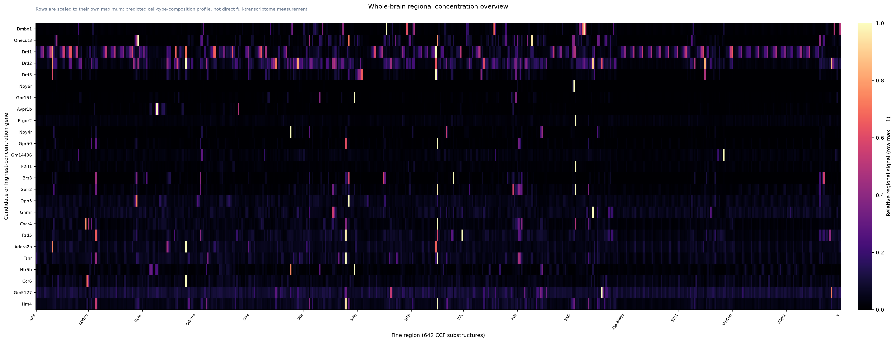

Whole-Brain Spatial Gene Screen
This report answers a practical question: which genes are concentrated in a small number of fine brain regions, and what evidence supports that conclusion? The 642-region result is a WMB cell-type-composition projection; direct MERFISH/Zhuang and Allen ISH evidence are shown separately.
30954genes screened
554fine regions
7104genes retained
0useful intersections
How to read this: WMB × MERFISH-CCF is a cell-type-composition projection, not direct full-transcriptome spatial measurement.
Regional concentration overview

Priority genes: requested controls and hypotheses
These genes are always reviewed and queried for direct Allen evidence, even when the spatial gate rejects them. In fine mode, STRICT_EXCLUSIVE means at most 12 positive regions out of 554; predicted profiles are not direct measurements.
| Gene | Status | Pattern | Top region | Meaning | Profile/card |
|---|---|---|---|---|---|
| Dmbx1 | PASS | RESTRICTED | MPT | Dmbx1: fine CCF profile is restricted toward MPT (top regions: MPT, SCsg, PPT, SCop, NOT; 19 positive regions); direct spatial validation is still required. | open review card |
| Onecut3 | PASS | RESTRICTED | B | Onecut3: fine CCF profile is restricted toward B (top regions: B, RCH, OV, MEPO, AVPV; 23 positive regions); direct spatial validation is still required. | open review card |
| Drd1 | REVIEW_REJECTED | REGION_BIASED | OT | Drd1: fine CCF profile is region-biased toward OT (top regions: OT, ACB, CP, CLA, ECT6b); this is a discovery lead, not direct proof. | open review card |
| Drd2 | PASS | REGION_BIASED | CP | Drd2: fine CCF profile is region-biased toward CP (top regions: CP, SH, VTA, TMd, IPDM); this is a discovery lead, not direct proof. | open review card |
| Drd3 | PASS | STRICT_EXCLUSIVE | OT | Drd3: predicted fine-region profile is strict-exclusive, with 12 positive regions out of 554 (limit 12); direct spatial validation is required. | open review card |
Ranked single genes
| Gene | Spatial tier | Class | Positive regions | Top region | Meaning | Evidence |
|---|---|---|---|---|---|---|
| Npy6r | STRICT_EXCLUSIVE | GPCR | 1/554 | SCH | Npy6r: predicted fine-region profile is strict-exclusive, with 1 positive regions out of 554 (limit 12); direct spatial validation is required. | C |
| Gpr151 | STRICT_EXCLUSIVE | GPCR | 3/554 | MH | Gpr151: predicted fine-region profile is strict-exclusive, with 3 positive regions out of 554 (limit 12); direct spatial validation is required. | C |
| Avpr1b | STRICT_EXCLUSIVE | GPCR | 4/554 | CA2sp | Avpr1b: predicted fine-region profile is strict-exclusive, with 4 positive regions out of 554 (limit 12); direct spatial validation is required. | C |
| Ptgdr2 | STRICT_EXCLUSIVE | GPCR | 1/554 | SCO | Ptgdr2: predicted fine-region profile is strict-exclusive, with 1 positive regions out of 554 (limit 12); direct spatial validation is required. | C |
| Npy4r | STRICT_EXCLUSIVE | GPCR | 6/554 | IO | Npy4r: predicted fine-region profile is strict-exclusive, with 6 positive regions out of 554 (limit 12); direct spatial validation is required. | C |
| Gpr50 | STRICT_EXCLUSIVE | GPCR | 5/554 | OV | Gpr50: predicted fine-region profile is strict-exclusive, with 5 positive regions out of 554 (limit 12); direct spatial validation is required. | C |
| Gm14496 | STRICT_EXCLUSIVE | GPCR | 3/554 | VII | Gm14496: predicted fine-region profile is strict-exclusive, with 3 positive regions out of 554 (limit 12); direct spatial validation is required. | C |
| F2rl1 | STRICT_EXCLUSIVE | GPCR | 1/554 | SCO | F2rl1: predicted fine-region profile is strict-exclusive, with 1 positive regions out of 554 (limit 12); direct spatial validation is required. | C |
| Brs3 | STRICT_EXCLUSIVE | GPCR | 10/554 | PD | Brs3: predicted fine-region profile is strict-exclusive, with 10 positive regions out of 554 (limit 12); direct spatial validation is required. | C |
| Galr2 | STRICT_EXCLUSIVE | GPCR | 12/554 | SCO | Galr2: predicted fine-region profile is strict-exclusive, with 12 positive regions out of 554 (limit 12); direct spatial validation is required. | C |
| Opn5 | STRICT_EXCLUSIVE | GPCR | 4/554 | MEPO | Opn5: predicted fine-region profile is strict-exclusive, with 4 positive regions out of 554 (limit 12); direct spatial validation is required. | C |
| Gnrhr | STRICT_EXCLUSIVE | GPCR | 4/554 | SH | Gnrhr: predicted fine-region profile is strict-exclusive, with 4 positive regions out of 554 (limit 12); direct spatial validation is required. | C |
| Cxcr4 | STRICT_EXCLUSIVE | GPCR | 9/554 | OV | Cxcr4: predicted fine-region profile is strict-exclusive, with 9 positive regions out of 554 (limit 12); direct spatial validation is required. | C |
| Fzd5 | STRICT_EXCLUSIVE | GPCR | 8/554 | PF | Fzd5: predicted fine-region profile is strict-exclusive, with 8 positive regions out of 554 (limit 12); direct spatial validation is required. | C |
| Adora2a | STRICT_EXCLUSIVE | GPCR | 6/554 | CP | Adora2a: predicted fine-region profile is strict-exclusive, with 6 positive regions out of 554 (limit 12); direct spatial validation is required. | C |
| Tshr | STRICT_EXCLUSIVE | GPCR | 9/554 | ME | Tshr: predicted fine-region profile is strict-exclusive, with 9 positive regions out of 554 (limit 12); direct spatial validation is required. | C |
| Htr5b | STRICT_EXCLUSIVE | GPCR | 8/554 | MH | Htr5b: predicted fine-region profile is strict-exclusive, with 8 positive regions out of 554 (limit 12); direct spatial validation is required. | C |
| Ccr6 | STRICT_EXCLUSIVE | GPCR | 3/554 | CP | Ccr6: predicted fine-region profile is strict-exclusive, with 3 positive regions out of 554 (limit 12); direct spatial validation is required. | C |
| Gm5127 | STRICT_EXCLUSIVE | GPCR | 8/554 | SNc | Gm5127: predicted fine-region profile is strict-exclusive, with 8 positive regions out of 554 (limit 12); direct spatial validation is required. | C |
| Drd3 | STRICT_EXCLUSIVE | GPCR | 12/554 | OT | Drd3: predicted fine-region profile is strict-exclusive, with 12 positive regions out of 554 (limit 12); direct spatial validation is required. | C |
| Hrh4 | STRICT_EXCLUSIVE | GPCR | 10/554 | OV | Hrh4: predicted fine-region profile is strict-exclusive, with 10 positive regions out of 554 (limit 12); direct spatial validation is required. | C |
| Opn1sw | STRICT_EXCLUSIVE | GPCR | 9/554 | ME | Opn1sw: predicted fine-region profile is strict-exclusive, with 9 positive regions out of 554 (limit 12); direct spatial validation is required. | C |
| Mtnr1a | STRICT_EXCLUSIVE | GPCR | 4/554 | PBG | Mtnr1a: predicted fine-region profile is strict-exclusive, with 4 positive regions out of 554 (limit 12); direct spatial validation is required. | C |
| Sctr | STRICT_EXCLUSIVE | GPCR | 6/554 | OV | Sctr: predicted fine-region profile is strict-exclusive, with 6 positive regions out of 554 (limit 12); direct spatial validation is required. | C |
| Gpr6 | STRICT_EXCLUSIVE | GPCR | 9/554 | CP | Gpr6: predicted fine-region profile is strict-exclusive, with 9 positive regions out of 554 (limit 12); direct spatial validation is required. | C |
| Gpr52 | STRICT_EXCLUSIVE | GPCR | 7/554 | CP | Gpr52: predicted fine-region profile is strict-exclusive, with 7 positive regions out of 554 (limit 12); direct spatial validation is required. | C |
| Opn4 | STRICT_EXCLUSIVE | GPCR | 4/554 | RT | Opn4: predicted fine-region profile is strict-exclusive, with 4 positive regions out of 554 (limit 12); direct spatial validation is required. | C |
| Gpr119 | STRICT_EXCLUSIVE | GPCR | 10/554 | IPR | Gpr119: predicted fine-region profile is strict-exclusive, with 10 positive regions out of 554 (limit 12); direct spatial validation is required. | C |
| Ltb4r1 | STRICT_EXCLUSIVE | GPCR | 11/554 | TMd | Ltb4r1: predicted fine-region profile is strict-exclusive, with 11 positive regions out of 554 (limit 12); direct spatial validation is required. | C |
| Ptgir | STRICT_EXCLUSIVE | GPCR | 8/554 | MH | Ptgir: predicted fine-region profile is strict-exclusive, with 8 positive regions out of 554 (limit 12); direct spatial validation is required. | C |
| Grpr | STRICT_EXCLUSIVE | GPCR | 6/554 | SCH | Grpr: predicted fine-region profile is strict-exclusive, with 6 positive regions out of 554 (limit 12); direct spatial validation is required. | C |
| Ptger1 | STRICT_EXCLUSIVE | GPCR | 4/554 | V | Ptger1: predicted fine-region profile is strict-exclusive, with 4 positive regions out of 554 (limit 12); direct spatial validation is required. | C |
| Prlhr | STRICT_EXCLUSIVE | GPCR | 11/554 | PMv | Prlhr: predicted fine-region profile is strict-exclusive, with 11 positive regions out of 554 (limit 12); direct spatial validation is required. | C |
| Gpr55 | STRICT_EXCLUSIVE | GPCR | 7/554 | SCO | Gpr55: predicted fine-region profile is strict-exclusive, with 7 positive regions out of 554 (limit 12); direct spatial validation is required. | C |
| Cysltr1 | STRICT_EXCLUSIVE | GPCR | 3/554 | ME | Cysltr1: predicted fine-region profile is strict-exclusive, with 3 positive regions out of 554 (limit 12); direct spatial validation is required. | C |
| Mrgpra6 | STRICT_EXCLUSIVE | GPCR | 6/554 | PBG | Mrgpra6: predicted fine-region profile is strict-exclusive, with 6 positive regions out of 554 (limit 12); direct spatial validation is required. | C |
| Gpr156 | STRICT_EXCLUSIVE | GPCR | 10/554 | MH | Gpr156: predicted fine-region profile is strict-exclusive, with 10 positive regions out of 554 (limit 12); direct spatial validation is required. | C |
| Ccr10 | STRICT_EXCLUSIVE | GPCR | 10/554 | OV | Ccr10: predicted fine-region profile is strict-exclusive, with 10 positive regions out of 554 (limit 12); direct spatial validation is required. | C |
| Kctd12b | STRICT_EXCLUSIVE | GPCR | 9/554 | MH | Kctd12b: predicted fine-region profile is strict-exclusive, with 9 positive regions out of 554 (limit 12); direct spatial validation is required. | C |
| Fzd4 | STRICT_EXCLUSIVE | GPCR | 3/554 | AP | Fzd4: predicted fine-region profile is strict-exclusive, with 3 positive regions out of 554 (limit 12); direct spatial validation is required. | C |
| Gabbr1 | STRICT_EXCLUSIVE | GPCR | 2/554 | MH | Gabbr1: predicted fine-region profile is strict-exclusive, with 2 positive regions out of 554 (limit 12); direct spatial validation is required. | C |
| Apol10a | STRICT_EXCLUSIVE | ION_CHANNEL | 3/554 | LC | Apol10a: predicted fine-region profile is strict-exclusive, with 3 positive regions out of 554 (limit 12); direct spatial validation is required. | C |
| Chrna2 | STRICT_EXCLUSIVE | ION_CHANNEL | 5/554 | IPR | Chrna2: predicted fine-region profile is strict-exclusive, with 5 positive regions out of 554 (limit 12); direct spatial validation is required. | C |
| Cnga1 | STRICT_EXCLUSIVE | ION_CHANNEL | 2/554 | IO | Cnga1: predicted fine-region profile is strict-exclusive, with 2 positive regions out of 554 (limit 12); direct spatial validation is required. | C |
| Slc6a4 | STRICT_EXCLUSIVE | ION_CHANNEL | 3/554 | DR | Slc6a4: predicted fine-region profile is strict-exclusive, with 3 positive regions out of 554 (limit 12); direct spatial validation is required. | C |
| Chrne | STRICT_EXCLUSIVE | ION_CHANNEL | 3/554 | SH | Chrne: predicted fine-region profile is strict-exclusive, with 3 positive regions out of 554 (limit 12); direct spatial validation is required. | C |
| Chrnb4 | STRICT_EXCLUSIVE | ION_CHANNEL | 3/554 | MH | Chrnb4: predicted fine-region profile is strict-exclusive, with 3 positive regions out of 554 (limit 12); direct spatial validation is required. | C |
| Apol9b | STRICT_EXCLUSIVE | ION_CHANNEL | 5/554 | RO | Apol9b: predicted fine-region profile is strict-exclusive, with 5 positive regions out of 554 (limit 12); direct spatial validation is required. | C |
| Cngb3 | STRICT_EXCLUSIVE | ION_CHANNEL | 2/554 | MH | Cngb3: predicted fine-region profile is strict-exclusive, with 2 positive regions out of 554 (limit 12); direct spatial validation is required. | C |
| Kcnk15 | STRICT_EXCLUSIVE | ION_CHANNEL | 7/554 | SOCl | Kcnk15: predicted fine-region profile is strict-exclusive, with 7 positive regions out of 554 (limit 12); direct spatial validation is required. | C |
| Otop1 | STRICT_EXCLUSIVE | ION_CHANNEL | 4/554 | RT | Otop1: predicted fine-region profile is strict-exclusive, with 4 positive regions out of 554 (limit 12); direct spatial validation is required. | C |
| Panx3 | STRICT_EXCLUSIVE | ION_CHANNEL | 7/554 | PVT | Panx3: predicted fine-region profile is strict-exclusive, with 7 positive regions out of 554 (limit 12); direct spatial validation is required. | C |
| Asic5 | STRICT_EXCLUSIVE | ION_CHANNEL | 4/554 | DCO | Asic5: predicted fine-region profile is strict-exclusive, with 4 positive regions out of 554 (limit 12); direct spatial validation is required. | C |
| Ano1 | STRICT_EXCLUSIVE | ION_CHANNEL | 5/554 | MH | Ano1: predicted fine-region profile is strict-exclusive, with 5 positive regions out of 554 (limit 12); direct spatial validation is required. | C |
| Chrnb3 | STRICT_EXCLUSIVE | ION_CHANNEL | 10/554 | MH | Chrnb3: predicted fine-region profile is strict-exclusive, with 10 positive regions out of 554 (limit 12); direct spatial validation is required. | C |
| Gabrr1 | STRICT_EXCLUSIVE | ION_CHANNEL | 6/554 | SCsg | Gabrr1: predicted fine-region profile is strict-exclusive, with 6 positive regions out of 554 (limit 12); direct spatial validation is required. | C |
| Grin3b | STRICT_EXCLUSIVE | ION_CHANNEL | 10/554 | III | Grin3b: predicted fine-region profile is strict-exclusive, with 10 positive regions out of 554 (limit 12); direct spatial validation is required. | C |
| Kcnmb1 | STRICT_EXCLUSIVE | ION_CHANNEL | 6/554 | SCO | Kcnmb1: predicted fine-region profile is strict-exclusive, with 6 positive regions out of 554 (limit 12); direct spatial validation is required. | C |
| Tmc3 | STRICT_EXCLUSIVE | ION_CHANNEL | 7/554 | SCO | Tmc3: predicted fine-region profile is strict-exclusive, with 7 positive regions out of 554 (limit 12); direct spatial validation is required. | C |
| Htr3b | STRICT_EXCLUSIVE | ION_CHANNEL | 1/554 | ARH | Htr3b: predicted fine-region profile is strict-exclusive, with 1 positive regions out of 554 (limit 12); direct spatial validation is required. | C |
| Tpte | STRICT_EXCLUSIVE | ION_CHANNEL | 10/554 | OV | Tpte: predicted fine-region profile is strict-exclusive, with 10 positive regions out of 554 (limit 12); direct spatial validation is required. | C |
| Kcnj14 | STRICT_EXCLUSIVE | ION_CHANNEL | 10/554 | V | Kcnj14: predicted fine-region profile is strict-exclusive, with 10 positive regions out of 554 (limit 12); direct spatial validation is required. | C |
| Lrrc8e | STRICT_EXCLUSIVE | ION_CHANNEL | 8/554 | MH | Lrrc8e: predicted fine-region profile is strict-exclusive, with 8 positive regions out of 554 (limit 12); direct spatial validation is required. | C |
| Chrna3 | STRICT_EXCLUSIVE | ION_CHANNEL | 7/554 | MH | Chrna3: predicted fine-region profile is strict-exclusive, with 7 positive regions out of 554 (limit 12); direct spatial validation is required. | C |
| Trpm1 | STRICT_EXCLUSIVE | ION_CHANNEL | 2/554 | MH | Trpm1: predicted fine-region profile is strict-exclusive, with 2 positive regions out of 554 (limit 12); direct spatial validation is required. | C |
| Slc26a9 | STRICT_EXCLUSIVE | ION_CHANNEL | 3/554 | ME | Slc26a9: predicted fine-region profile is strict-exclusive, with 3 positive regions out of 554 (limit 12); direct spatial validation is required. | C |
| Cftr | STRICT_EXCLUSIVE | ION_CHANNEL | 5/554 | MH | Cftr: predicted fine-region profile is strict-exclusive, with 5 positive regions out of 554 (limit 12); direct spatial validation is required. | C |
| Slc4a11 | STRICT_EXCLUSIVE | ION_CHANNEL | 10/554 | CEAl | Slc4a11: predicted fine-region profile is strict-exclusive, with 10 positive regions out of 554 (limit 12); direct spatial validation is required. | C |
| Atp5e | STRICT_EXCLUSIVE | ION_CHANNEL | 12/554 | AP | Atp5e: predicted fine-region profile is strict-exclusive, with 12 positive regions out of 554 (limit 12); direct spatial validation is required. | C |
| Catsper4 | STRICT_EXCLUSIVE | ION_CHANNEL | 8/554 | DR | Catsper4: predicted fine-region profile is strict-exclusive, with 8 positive regions out of 554 (limit 12); direct spatial validation is required. | C |
| Kcna10 | STRICT_EXCLUSIVE | ION_CHANNEL | 4/554 | VMH | Kcna10: predicted fine-region profile is strict-exclusive, with 4 positive regions out of 554 (limit 12); direct spatial validation is required. | C |
| Pkdrej | STRICT_EXCLUSIVE | ION_CHANNEL | 4/554 | V | Pkdrej: predicted fine-region profile is strict-exclusive, with 4 positive regions out of 554 (limit 12); direct spatial validation is required. | C |
| Asic3 | STRICT_EXCLUSIVE | ION_CHANNEL | 3/554 | ME | Asic3: predicted fine-region profile is strict-exclusive, with 3 positive regions out of 554 (limit 12); direct spatial validation is required. | C |
| Lrrc55 | STRICT_EXCLUSIVE | ION_CHANNEL | 11/554 | MH | Lrrc55: predicted fine-region profile is strict-exclusive, with 11 positive regions out of 554 (limit 12); direct spatial validation is required. | C |
| Slc6a2 | STRICT_EXCLUSIVE | NEUROMODULATORY_SIGNAL | 3/554 | LC | Slc6a2: predicted fine-region profile is strict-exclusive, with 3 positive regions out of 554 (limit 12); direct spatial validation is required. | C |
| Dbh | STRICT_EXCLUSIVE | NEUROMODULATORY_SIGNAL | 4/554 | LC | Dbh: predicted fine-region profile is strict-exclusive, with 4 positive regions out of 554 (limit 12); direct spatial validation is required. | C |
| Slc6a3 | STRICT_EXCLUSIVE | NEUROMODULATORY_SIGNAL | 10/554 | VTA | Slc6a3: predicted fine-region profile is strict-exclusive, with 10 positive regions out of 554 (limit 12); direct spatial validation is required. | C |
| Chat | STRICT_EXCLUSIVE | NEUROMODULATORY_SIGNAL | 8/554 | MH | Chat: predicted fine-region profile is strict-exclusive, with 8 positive regions out of 554 (limit 12); direct spatial validation is required. | C |
| Avp | STRICT_EXCLUSIVE | NEUROMODULATORY_SIGNAL | 7/554 | SCH | Avp: predicted fine-region profile is strict-exclusive, with 7 positive regions out of 554 (limit 12); direct spatial validation is required. | C |
| Tcstv3 | STRICT_EXCLUSIVE | OTHER | 1/554 | SCO | Tcstv3: predicted fine-region profile is strict-exclusive, with 1 positive regions out of 554 (limit 12); direct spatial validation is required. | C |
| Gm21818 | STRICT_EXCLUSIVE | OTHER | 1/554 | SCO | Gm21818: predicted fine-region profile is strict-exclusive, with 1 positive regions out of 554 (limit 12); direct spatial validation is required. | C |
| Wt1os | STRICT_EXCLUSIVE | OTHER | 1/554 | AP | Wt1os: predicted fine-region profile is strict-exclusive, with 1 positive regions out of 554 (limit 12); direct spatial validation is required. | C |
| Gm5741 | STRICT_EXCLUSIVE | OTHER | 1/554 | MH | Gm5741: predicted fine-region profile is strict-exclusive, with 1 positive regions out of 554 (limit 12); direct spatial validation is required. | C |
| Strit1 | STRICT_EXCLUSIVE | OTHER | 1/554 | CP | Strit1: predicted fine-region profile is strict-exclusive, with 1 positive regions out of 554 (limit 12); direct spatial validation is required. | C |
| Gm43782 | STRICT_EXCLUSIVE | OTHER | 2/554 | ME | Gm43782: predicted fine-region profile is strict-exclusive, with 2 positive regions out of 554 (limit 12); direct spatial validation is required. | C |
| Fndc3c1 | STRICT_EXCLUSIVE | OTHER | 2/554 | ME | Fndc3c1: predicted fine-region profile is strict-exclusive, with 2 positive regions out of 554 (limit 12); direct spatial validation is required. | C |
| Gm5624 | STRICT_EXCLUSIVE | OTHER | 1/554 | AP | Gm5624: predicted fine-region profile is strict-exclusive, with 1 positive regions out of 554 (limit 12); direct spatial validation is required. | C |
| 4930449C09Rik | STRICT_EXCLUSIVE | OTHER | 1/554 | SCO | 4930449C09Rik: predicted fine-region profile is strict-exclusive, with 1 positive regions out of 554 (limit 12); direct spatial validation is required. | C |
| Wt1 | STRICT_EXCLUSIVE | OTHER | 1/554 | AP | Wt1: predicted fine-region profile is strict-exclusive, with 1 positive regions out of 554 (limit 12); direct spatial validation is required. | C |
| Gm10824 | STRICT_EXCLUSIVE | OTHER | 1/554 | ME | Gm10824: predicted fine-region profile is strict-exclusive, with 1 positive regions out of 554 (limit 12); direct spatial validation is required. | C |
| Ferd3l | STRICT_EXCLUSIVE | OTHER | 1/554 | SCO | Ferd3l: predicted fine-region profile is strict-exclusive, with 1 positive regions out of 554 (limit 12); direct spatial validation is required. | C |
| Sprr2i | STRICT_EXCLUSIVE | OTHER | 1/554 | PVT | Sprr2i: predicted fine-region profile is strict-exclusive, with 1 positive regions out of 554 (limit 12); direct spatial validation is required. | C |
| Gm22219 | STRICT_EXCLUSIVE | OTHER | 1/554 | SCO | Gm22219: predicted fine-region profile is strict-exclusive, with 1 positive regions out of 554 (limit 12); direct spatial validation is required. | C |
| Gm17226 | STRICT_EXCLUSIVE | OTHER | 2/554 | XII | Gm17226: predicted fine-region profile is strict-exclusive, with 2 positive regions out of 554 (limit 12); direct spatial validation is required. | C |
| A730006G06Rik | STRICT_EXCLUSIVE | OTHER | 1/554 | SCO | A730006G06Rik: predicted fine-region profile is strict-exclusive, with 1 positive regions out of 554 (limit 12); direct spatial validation is required. | C |
| Sprr2a2 | STRICT_EXCLUSIVE | OTHER | 1/554 | ME | Sprr2a2: predicted fine-region profile is strict-exclusive, with 1 positive regions out of 554 (limit 12); direct spatial validation is required. | C |
| Epb42 | STRICT_EXCLUSIVE | OTHER | 1/554 | MH | Epb42: predicted fine-region profile is strict-exclusive, with 1 positive regions out of 554 (limit 12); direct spatial validation is required. | C |
| Defa24 | STRICT_EXCLUSIVE | OTHER | 1/554 | AP | Defa24: predicted fine-region profile is strict-exclusive, with 1 positive regions out of 554 (limit 12); direct spatial validation is required. | C |
| Nr5a1 | STRICT_EXCLUSIVE | OTHER | 2/554 | VMH | Nr5a1: predicted fine-region profile is strict-exclusive, with 2 positive regions out of 554 (limit 12); direct spatial validation is required. | C |
| Gsc | STRICT_EXCLUSIVE | OTHER | 2/554 | PVHd | Gsc: predicted fine-region profile is strict-exclusive, with 2 positive regions out of 554 (limit 12); direct spatial validation is required. | C |
| Gm6567 | STRICT_EXCLUSIVE | OTHER | 2/554 | OV | Gm6567: predicted fine-region profile is strict-exclusive, with 2 positive regions out of 554 (limit 12); direct spatial validation is required. | C |
| Gm30192 | STRICT_EXCLUSIVE | OTHER | 1/554 | SCO | Gm30192: predicted fine-region profile is strict-exclusive, with 1 positive regions out of 554 (limit 12); direct spatial validation is required. | C |
| Gm14055 | STRICT_EXCLUSIVE | OTHER | 1/554 | SCO | Gm14055: predicted fine-region profile is strict-exclusive, with 1 positive regions out of 554 (limit 12); direct spatial validation is required. | C |
| Gm20767 | STRICT_EXCLUSIVE | OTHER | 1/554 | SCO | Gm20767: predicted fine-region profile is strict-exclusive, with 1 positive regions out of 554 (limit 12); direct spatial validation is required. | C |
| Gm43101 | STRICT_EXCLUSIVE | OTHER | 3/554 | IO | Gm43101: predicted fine-region profile is strict-exclusive, with 3 positive regions out of 554 (limit 12); direct spatial validation is required. | C |
| Tcf21 | STRICT_EXCLUSIVE | OTHER | 1/554 | ME | Tcf21: predicted fine-region profile is strict-exclusive, with 1 positive regions out of 554 (limit 12); direct spatial validation is required. | C |
| Creb3l4 | STRICT_EXCLUSIVE | OTHER | 1/554 | SCO | Creb3l4: predicted fine-region profile is strict-exclusive, with 1 positive regions out of 554 (limit 12); direct spatial validation is required. | C |
| Dbx1 | STRICT_EXCLUSIVE | OTHER | 5/554 | SFO | Dbx1: predicted fine-region profile is strict-exclusive, with 5 positive regions out of 554 (limit 12); direct spatial validation is required. | C |
| Gm31392 | STRICT_EXCLUSIVE | OTHER | 1/554 | MH | Gm31392: predicted fine-region profile is strict-exclusive, with 1 positive regions out of 554 (limit 12); direct spatial validation is required. | C |
| Gm49732 | STRICT_EXCLUSIVE | OTHER | 2/554 | AHN | Gm49732: predicted fine-region profile is strict-exclusive, with 2 positive regions out of 554 (limit 12); direct spatial validation is required. | C |
| Prr9 | STRICT_EXCLUSIVE | OTHER | 2/554 | ME | Prr9: predicted fine-region profile is strict-exclusive, with 2 positive regions out of 554 (limit 12); direct spatial validation is required. | C |
| Gcm2 | STRICT_EXCLUSIVE | OTHER | 4/554 | PF | Gcm2: predicted fine-region profile is strict-exclusive, with 4 positive regions out of 554 (limit 12); direct spatial validation is required. | C |
| 9330178D15Rik | STRICT_EXCLUSIVE | OTHER | 1/554 | MH | 9330178D15Rik: predicted fine-region profile is strict-exclusive, with 1 positive regions out of 554 (limit 12); direct spatial validation is required. | C |
| Gm12315 | STRICT_EXCLUSIVE | OTHER | 3/554 | SH | Gm12315: predicted fine-region profile is strict-exclusive, with 3 positive regions out of 554 (limit 12); direct spatial validation is required. | C |
| Krt5 | STRICT_EXCLUSIVE | OTHER | 6/554 | CA3so | Krt5: predicted fine-region profile is strict-exclusive, with 6 positive regions out of 554 (limit 12); direct spatial validation is required. | C |
| Raxos1 | STRICT_EXCLUSIVE | OTHER | 4/554 | ME | Raxos1: predicted fine-region profile is strict-exclusive, with 4 positive regions out of 554 (limit 12); direct spatial validation is required. | C |
| Ms4a2 | STRICT_EXCLUSIVE | OTHER | 1/554 | PBG | Ms4a2: predicted fine-region profile is strict-exclusive, with 1 positive regions out of 554 (limit 12); direct spatial validation is required. | C |
| Gm10000 | STRICT_EXCLUSIVE | OTHER | 2/554 | AHN | Gm10000: predicted fine-region profile is strict-exclusive, with 2 positive regions out of 554 (limit 12); direct spatial validation is required. | C |
| Krt4 | STRICT_EXCLUSIVE | OTHER | 4/554 | SUM | Krt4: predicted fine-region profile is strict-exclusive, with 4 positive regions out of 554 (limit 12); direct spatial validation is required. | C |
| Crisp3 | STRICT_EXCLUSIVE | OTHER | 4/554 | IPR | Crisp3: predicted fine-region profile is strict-exclusive, with 4 positive regions out of 554 (limit 12); direct spatial validation is required. | C |
| Gm42208 | STRICT_EXCLUSIVE | OTHER | 7/554 | IF | Gm42208: predicted fine-region profile is strict-exclusive, with 7 positive regions out of 554 (limit 12); direct spatial validation is required. | C |
| Barx1 | STRICT_EXCLUSIVE | OTHER | 3/554 | PCN | Barx1: predicted fine-region profile is strict-exclusive, with 3 positive regions out of 554 (limit 12); direct spatial validation is required. | C |
| Pax9 | STRICT_EXCLUSIVE | OTHER | 1/554 | ME | Pax9: predicted fine-region profile is strict-exclusive, with 1 positive regions out of 554 (limit 12); direct spatial validation is required. | C |
| AA645442 | STRICT_EXCLUSIVE | OTHER | 1/554 | MH | AA645442: predicted fine-region profile is strict-exclusive, with 1 positive regions out of 554 (limit 12); direct spatial validation is required. | C |
| Tbx20 | STRICT_EXCLUSIVE | OTHER | 3/554 | DMX | Tbx20: predicted fine-region profile is strict-exclusive, with 3 positive regions out of 554 (limit 12); direct spatial validation is required. | C |
| Tbc1d21 | STRICT_EXCLUSIVE | OTHER | 1/554 | OV | Tbc1d21: predicted fine-region profile is strict-exclusive, with 1 positive regions out of 554 (limit 12); direct spatial validation is required. | C |
| 4930550L24Rik | STRICT_EXCLUSIVE | OTHER | 3/554 | LC | 4930550L24Rik: predicted fine-region profile is strict-exclusive, with 3 positive regions out of 554 (limit 12); direct spatial validation is required. | C |
| Gm30190 | STRICT_EXCLUSIVE | OTHER | 1/554 | SCO | Gm30190: predicted fine-region profile is strict-exclusive, with 1 positive regions out of 554 (limit 12); direct spatial validation is required. | C |
| Gm45037 | STRICT_EXCLUSIVE | OTHER | 2/554 | RO | Gm45037: predicted fine-region profile is strict-exclusive, with 2 positive regions out of 554 (limit 12); direct spatial validation is required. | C |
| Foxd4 | STRICT_EXCLUSIVE | OTHER | 4/554 | PN | Foxd4: predicted fine-region profile is strict-exclusive, with 4 positive regions out of 554 (limit 12); direct spatial validation is required. | C |
| Tlx1 | STRICT_EXCLUSIVE | OTHER | 3/554 | PSV | Tlx1: predicted fine-region profile is strict-exclusive, with 3 positive regions out of 554 (limit 12); direct spatial validation is required. | C |
| Defa29 | STRICT_EXCLUSIVE | OTHER | 1/554 | AP | Defa29: predicted fine-region profile is strict-exclusive, with 1 positive regions out of 554 (limit 12); direct spatial validation is required. | C |
| Cytip | STRICT_EXCLUSIVE | OTHER | 3/554 | MH | Cytip: predicted fine-region profile is strict-exclusive, with 3 positive regions out of 554 (limit 12); direct spatial validation is required. | C |
| Gm28543 | STRICT_EXCLUSIVE | OTHER | 7/554 | MMp | Gm28543: predicted fine-region profile is strict-exclusive, with 7 positive regions out of 554 (limit 12); direct spatial validation is required. | C |
| Crisp1 | STRICT_EXCLUSIVE | OTHER | 4/554 | IPR | Crisp1: predicted fine-region profile is strict-exclusive, with 4 positive regions out of 554 (limit 12); direct spatial validation is required. | C |
| Gm26709 | STRICT_EXCLUSIVE | OTHER | 6/554 | SCH | Gm26709: predicted fine-region profile is strict-exclusive, with 6 positive regions out of 554 (limit 12); direct spatial validation is required. | C |
| Ifi27l2b | STRICT_EXCLUSIVE | OTHER | 2/554 | CP | Ifi27l2b: predicted fine-region profile is strict-exclusive, with 2 positive regions out of 554 (limit 12); direct spatial validation is required. | C |
| 4930579P08Rik | STRICT_EXCLUSIVE | OTHER | 3/554 | VII | 4930579P08Rik: predicted fine-region profile is strict-exclusive, with 3 positive regions out of 554 (limit 12); direct spatial validation is required. | C |
| Wfdc10 | STRICT_EXCLUSIVE | OTHER | 1/554 | AD | Wfdc10: predicted fine-region profile is strict-exclusive, with 1 positive regions out of 554 (limit 12); direct spatial validation is required. | C |
| BC147527 | STRICT_EXCLUSIVE | OTHER | 1/554 | SCO | BC147527: predicted fine-region profile is strict-exclusive, with 1 positive regions out of 554 (limit 12); direct spatial validation is required. | C |
| Nr5a1os | STRICT_EXCLUSIVE | OTHER | 2/554 | VMH | Nr5a1os: predicted fine-region profile is strict-exclusive, with 2 positive regions out of 554 (limit 12); direct spatial validation is required. | C |
| Lce3f | STRICT_EXCLUSIVE | OTHER | 2/554 | ACB | Lce3f: predicted fine-region profile is strict-exclusive, with 2 positive regions out of 554 (limit 12); direct spatial validation is required. | C |
| Wfdc12 | STRICT_EXCLUSIVE | OTHER | 2/554 | DR | Wfdc12: predicted fine-region profile is strict-exclusive, with 2 positive regions out of 554 (limit 12); direct spatial validation is required. | C |
| Gm15469 | STRICT_EXCLUSIVE | OTHER | 2/554 | RL | Gm15469: predicted fine-region profile is strict-exclusive, with 2 positive regions out of 554 (limit 12); direct spatial validation is required. | C |
| Foxb2 | STRICT_EXCLUSIVE | OTHER | 5/554 | TMd | Foxb2: predicted fine-region profile is strict-exclusive, with 5 positive regions out of 554 (limit 12); direct spatial validation is required. | C |
| Six6 | STRICT_EXCLUSIVE | OTHER | 7/554 | SCH | Six6: predicted fine-region profile is strict-exclusive, with 7 positive regions out of 554 (limit 12); direct spatial validation is required. | C |
| Phf11a | STRICT_EXCLUSIVE | OTHER | 3/554 | V | Phf11a: predicted fine-region profile is strict-exclusive, with 3 positive regions out of 554 (limit 12); direct spatial validation is required. | C |
| Foxn4 | STRICT_EXCLUSIVE | OTHER | 3/554 | SCH | Foxn4: predicted fine-region profile is strict-exclusive, with 3 positive regions out of 554 (limit 12); direct spatial validation is required. | C |
| Ldlrad2 | STRICT_EXCLUSIVE | OTHER | 1/554 | SCO | Ldlrad2: predicted fine-region profile is strict-exclusive, with 1 positive regions out of 554 (limit 12); direct spatial validation is required. | C |
| Gm38534 | STRICT_EXCLUSIVE | OTHER | 1/554 | MH | Gm38534: predicted fine-region profile is strict-exclusive, with 1 positive regions out of 554 (limit 12); direct spatial validation is required. | C |
| Il20 | STRICT_EXCLUSIVE | OTHER | 5/554 | PG | Il20: predicted fine-region profile is strict-exclusive, with 5 positive regions out of 554 (limit 12); direct spatial validation is required. | C |
| Bsx | STRICT_EXCLUSIVE | OTHER | 9/554 | ARH | Bsx: predicted fine-region profile is strict-exclusive, with 9 positive regions out of 554 (limit 12); direct spatial validation is required. | C |
| Gm13010 | STRICT_EXCLUSIVE | OTHER | 2/554 | ARH | Gm13010: predicted fine-region profile is strict-exclusive, with 2 positive regions out of 554 (limit 12); direct spatial validation is required. | C |
| Tmem207 | STRICT_EXCLUSIVE | OTHER | 9/554 | VTA | Tmem207: predicted fine-region profile is strict-exclusive, with 9 positive regions out of 554 (limit 12); direct spatial validation is required. | C |
| Gm34240 | STRICT_EXCLUSIVE | OTHER | 2/554 | CP | Gm34240: predicted fine-region profile is strict-exclusive, with 2 positive regions out of 554 (limit 12); direct spatial validation is required. | C |
| Tbx19 | STRICT_EXCLUSIVE | OTHER | 8/554 | ARH | Tbx19: predicted fine-region profile is strict-exclusive, with 8 positive regions out of 554 (limit 12); direct spatial validation is required. | C |
| Gm11309 | STRICT_EXCLUSIVE | OTHER | 6/554 | DTN | Gm11309: predicted fine-region profile is strict-exclusive, with 6 positive regions out of 554 (limit 12); direct spatial validation is required. | C |
| Gm35215 | STRICT_EXCLUSIVE | OTHER | 1/554 | SCO | Gm35215: predicted fine-region profile is strict-exclusive, with 1 positive regions out of 554 (limit 12); direct spatial validation is required. | C |
| Cdh26 | STRICT_EXCLUSIVE | OTHER | 1/554 | SCO | Cdh26: predicted fine-region profile is strict-exclusive, with 1 positive regions out of 554 (limit 12); direct spatial validation is required. | C |
| 4933425B07Rik | STRICT_EXCLUSIVE | OTHER | 3/554 | IO | 4933425B07Rik: predicted fine-region profile is strict-exclusive, with 3 positive regions out of 554 (limit 12); direct spatial validation is required. | C |
| Dynap | STRICT_EXCLUSIVE | OTHER | 5/554 | Pa5 | Dynap: predicted fine-region profile is strict-exclusive, with 5 positive regions out of 554 (limit 12); direct spatial validation is required. | C |
| Phox2a | STRICT_EXCLUSIVE | OTHER | 4/554 | LC | Phox2a: predicted fine-region profile is strict-exclusive, with 4 positive regions out of 554 (limit 12); direct spatial validation is required. | C |
| 4933438B17Rik | STRICT_EXCLUSIVE | OTHER | 1/554 | PBG | 4933438B17Rik: predicted fine-region profile is strict-exclusive, with 1 positive regions out of 554 (limit 12); direct spatial validation is required. | C |
| Gm43450 | STRICT_EXCLUSIVE | OTHER | 3/554 | LC | Gm43450: predicted fine-region profile is strict-exclusive, with 3 positive regions out of 554 (limit 12); direct spatial validation is required. | C |
| Pth2 | STRICT_EXCLUSIVE | OTHER | 6/554 | SPA | Pth2: predicted fine-region profile is strict-exclusive, with 6 positive regions out of 554 (limit 12); direct spatial validation is required. | C |
| Nms | STRICT_EXCLUSIVE | OTHER | 3/554 | SCH | Nms: predicted fine-region profile is strict-exclusive, with 3 positive regions out of 554 (limit 12); direct spatial validation is required. | C |
| AI606473 | STRICT_EXCLUSIVE | OTHER | 9/554 | PS | AI606473: predicted fine-region profile is strict-exclusive, with 9 positive regions out of 554 (limit 12); direct spatial validation is required. | C |
| Gm19301 | STRICT_EXCLUSIVE | OTHER | 3/554 | SCO | Gm19301: predicted fine-region profile is strict-exclusive, with 3 positive regions out of 554 (limit 12); direct spatial validation is required. | C |
| Gm45589 | STRICT_EXCLUSIVE | OTHER | 1/554 | B | Gm45589: predicted fine-region profile is strict-exclusive, with 1 positive regions out of 554 (limit 12); direct spatial validation is required. | C |
| 6330420H09Rik | STRICT_EXCLUSIVE | OTHER | 6/554 | CA1sp | 6330420H09Rik: predicted fine-region profile is strict-exclusive, with 6 positive regions out of 554 (limit 12); direct spatial validation is required. | C |
| Fev | STRICT_EXCLUSIVE | OTHER | 3/554 | DR | Fev: predicted fine-region profile is strict-exclusive, with 3 positive regions out of 554 (limit 12); direct spatial validation is required. | C |
| 1700018B24Rik | STRICT_EXCLUSIVE | OTHER | 4/554 | PAR | 1700018B24Rik: predicted fine-region profile is strict-exclusive, with 4 positive regions out of 554 (limit 12); direct spatial validation is required. | C |
| Skint1 | STRICT_EXCLUSIVE | OTHER | 3/554 | ProS | Skint1: predicted fine-region profile is strict-exclusive, with 3 positive regions out of 554 (limit 12); direct spatial validation is required. | C |
| Rnase12 | STRICT_EXCLUSIVE | OTHER | 2/554 | RO | Rnase12: predicted fine-region profile is strict-exclusive, with 2 positive regions out of 554 (limit 12); direct spatial validation is required. | C |
| Serpina3b | STRICT_EXCLUSIVE | OTHER | 5/554 | IPR | Serpina3b: predicted fine-region profile is strict-exclusive, with 5 positive regions out of 554 (limit 12); direct spatial validation is required. | C |
| Isl2 | STRICT_EXCLUSIVE | OTHER | 6/554 | V | Isl2: predicted fine-region profile is strict-exclusive, with 6 positive regions out of 554 (limit 12); direct spatial validation is required. | C |
| Pitx3 | STRICT_EXCLUSIVE | OTHER | 11/554 | VTA | Pitx3: predicted fine-region profile is strict-exclusive, with 11 positive regions out of 554 (limit 12); direct spatial validation is required. | C |
| Gm14161 | STRICT_EXCLUSIVE | OTHER | 10/554 | SNc | Gm14161: predicted fine-region profile is strict-exclusive, with 10 positive regions out of 554 (limit 12); direct spatial validation is required. | C |
| Ptpn7 | STRICT_EXCLUSIVE | OTHER | 3/554 | CP | Ptpn7: predicted fine-region profile is strict-exclusive, with 3 positive regions out of 554 (limit 12); direct spatial validation is required. | C |
| Gm13816 | STRICT_EXCLUSIVE | OTHER | 1/554 | AD | Gm13816: predicted fine-region profile is strict-exclusive, with 1 positive regions out of 554 (limit 12); direct spatial validation is required. | C |
| Pla2g2f | STRICT_EXCLUSIVE | OTHER | 7/554 | IPR | Pla2g2f: predicted fine-region profile is strict-exclusive, with 7 positive regions out of 554 (limit 12); direct spatial validation is required. | C |
| Gm41322 | STRICT_EXCLUSIVE | OTHER | 9/554 | ENTm5 | Gm41322: predicted fine-region profile is strict-exclusive, with 9 positive regions out of 554 (limit 12); direct spatial validation is required. | C |
| Btnl10 | STRICT_EXCLUSIVE | OTHER | 6/554 | IPR | Btnl10: predicted fine-region profile is strict-exclusive, with 6 positive regions out of 554 (limit 12); direct spatial validation is required. | C |
| Hoxb5os | STRICT_EXCLUSIVE | OTHER | 6/554 | AP | Hoxb5os: predicted fine-region profile is strict-exclusive, with 6 positive regions out of 554 (limit 12); direct spatial validation is required. | C |
| Gm39043 | STRICT_EXCLUSIVE | OTHER | 2/554 | CP | Gm39043: predicted fine-region profile is strict-exclusive, with 2 positive regions out of 554 (limit 12); direct spatial validation is required. | C |
| Tekt3 | STRICT_EXCLUSIVE | OTHER | 2/554 | SCO | Tekt3: predicted fine-region profile is strict-exclusive, with 2 positive regions out of 554 (limit 12); direct spatial validation is required. | C |
| Hoxa6 | STRICT_EXCLUSIVE | OTHER | 5/554 | Pa5 | Hoxa6: predicted fine-region profile is strict-exclusive, with 5 positive regions out of 554 (limit 12); direct spatial validation is required. | C |
| Fam216b | STRICT_EXCLUSIVE | OTHER | 4/554 | SCO | Fam216b: predicted fine-region profile is strict-exclusive, with 4 positive regions out of 554 (limit 12); direct spatial validation is required. | C |
| Gulo | STRICT_EXCLUSIVE | OTHER | 7/554 | IPR | Gulo: predicted fine-region profile is strict-exclusive, with 7 positive regions out of 554 (limit 12); direct spatial validation is required. | C |
| D130079A08Rik | STRICT_EXCLUSIVE | OTHER | 3/554 | MH | D130079A08Rik: predicted fine-region profile is strict-exclusive, with 3 positive regions out of 554 (limit 12); direct spatial validation is required. | C |
| Gm37323 | STRICT_EXCLUSIVE | OTHER | 3/554 | VII | Gm37323: predicted fine-region profile is strict-exclusive, with 3 positive regions out of 554 (limit 12); direct spatial validation is required. | C |
| Gm5547 | STRICT_EXCLUSIVE | OTHER | 1/554 | SCO | Gm5547: predicted fine-region profile is strict-exclusive, with 1 positive regions out of 554 (limit 12); direct spatial validation is required. | C |
| Ido1 | STRICT_EXCLUSIVE | OTHER | 3/554 | CP | Ido1: predicted fine-region profile is strict-exclusive, with 3 positive regions out of 554 (limit 12); direct spatial validation is required. | C |
| 4930425P05Rik | STRICT_EXCLUSIVE | OTHER | 2/554 | SCO | 4930425P05Rik: predicted fine-region profile is strict-exclusive, with 2 positive regions out of 554 (limit 12); direct spatial validation is required. | C |
| Nkx2-4 | STRICT_EXCLUSIVE | OTHER | 8/554 | ME | Nkx2-4: predicted fine-region profile is strict-exclusive, with 8 positive regions out of 554 (limit 12); direct spatial validation is required. | C |
| Igkc | STRICT_EXCLUSIVE | OTHER | 6/554 | PVT | Igkc: predicted fine-region profile is strict-exclusive, with 6 positive regions out of 554 (limit 12); direct spatial validation is required. | C |
| Tctex1d4 | STRICT_EXCLUSIVE | OTHER | 4/554 | SCO | Tctex1d4: predicted fine-region profile is strict-exclusive, with 4 positive regions out of 554 (limit 12); direct spatial validation is required. | C |
| Wfdc2 | STRICT_EXCLUSIVE | OTHER | 1/554 | SCO | Wfdc2: predicted fine-region profile is strict-exclusive, with 1 positive regions out of 554 (limit 12); direct spatial validation is required. | C |
| Hoxb7 | STRICT_EXCLUSIVE | OTHER | 5/554 | Pa5 | Hoxb7: predicted fine-region profile is strict-exclusive, with 5 positive regions out of 554 (limit 12); direct spatial validation is required. | C |
| 4930528P14Rik | STRICT_EXCLUSIVE | OTHER | 6/554 | CEAl | 4930528P14Rik: predicted fine-region profile is strict-exclusive, with 6 positive regions out of 554 (limit 12); direct spatial validation is required. | C |
| Zfp474 | STRICT_EXCLUSIVE | OTHER | 5/554 | SCO | Zfp474: predicted fine-region profile is strict-exclusive, with 5 positive regions out of 554 (limit 12); direct spatial validation is required. | C |
| Ifng | STRICT_EXCLUSIVE | OTHER | 5/554 | PVi | Ifng: predicted fine-region profile is strict-exclusive, with 5 positive regions out of 554 (limit 12); direct spatial validation is required. | C |
| Gm32341 | STRICT_EXCLUSIVE | OTHER | 5/554 | TMd | Gm32341: predicted fine-region profile is strict-exclusive, with 5 positive regions out of 554 (limit 12); direct spatial validation is required. | C |
| Uts2b | STRICT_EXCLUSIVE | OTHER | 10/554 | DMX | Uts2b: predicted fine-region profile is strict-exclusive, with 10 positive regions out of 554 (limit 12); direct spatial validation is required. | C |
| Ces1d | STRICT_EXCLUSIVE | OTHER | 4/554 | OV | Ces1d: predicted fine-region profile is strict-exclusive, with 4 positive regions out of 554 (limit 12); direct spatial validation is required. | C |
| Uts2 | STRICT_EXCLUSIVE | OTHER | 6/554 | XII | Uts2: predicted fine-region profile is strict-exclusive, with 6 positive regions out of 554 (limit 12); direct spatial validation is required. | C |
| Tyrp1 | STRICT_EXCLUSIVE | OTHER | 1/554 | MH | Tyrp1: predicted fine-region profile is strict-exclusive, with 1 positive regions out of 554 (limit 12); direct spatial validation is required. | C |
| Gm41584 | STRICT_EXCLUSIVE | OTHER | 10/554 | PVpo | Gm41584: predicted fine-region profile is strict-exclusive, with 10 positive regions out of 554 (limit 12); direct spatial validation is required. | C |
| 4930511M18Rik | STRICT_EXCLUSIVE | OTHER | 2/554 | ME | 4930511M18Rik: predicted fine-region profile is strict-exclusive, with 2 positive regions out of 554 (limit 12); direct spatial validation is required. | C |
| Gm40977 | STRICT_EXCLUSIVE | OTHER | 4/554 | MMp | Gm40977: predicted fine-region profile is strict-exclusive, with 4 positive regions out of 554 (limit 12); direct spatial validation is required. | C |
| Gm46516 | STRICT_EXCLUSIVE | OTHER | 1/554 | SCO | Gm46516: predicted fine-region profile is strict-exclusive, with 1 positive regions out of 554 (limit 12); direct spatial validation is required. | C |
| Oas1e | STRICT_EXCLUSIVE | OTHER | 3/554 | DR | Oas1e: predicted fine-region profile is strict-exclusive, with 3 positive regions out of 554 (limit 12); direct spatial validation is required. | C |
| D730050B12Rik | STRICT_EXCLUSIVE | OTHER | 6/554 | PG | D730050B12Rik: predicted fine-region profile is strict-exclusive, with 6 positive regions out of 554 (limit 12); direct spatial validation is required. | C |
| Gm48570 | STRICT_EXCLUSIVE | OTHER | 7/554 | PVpo | Gm48570: predicted fine-region profile is strict-exclusive, with 7 positive regions out of 554 (limit 12); direct spatial validation is required. | C |
| Mhrt | STRICT_EXCLUSIVE | OTHER | 5/554 | ACB | Mhrt: predicted fine-region profile is strict-exclusive, with 5 positive regions out of 554 (limit 12); direct spatial validation is required. | C |
| Gm15831 | STRICT_EXCLUSIVE | OTHER | 2/554 | SCO | Gm15831: predicted fine-region profile is strict-exclusive, with 2 positive regions out of 554 (limit 12); direct spatial validation is required. | C |
| D330037F02Rik | STRICT_EXCLUSIVE | OTHER | 2/554 | AP | D330037F02Rik: predicted fine-region profile is strict-exclusive, with 2 positive regions out of 554 (limit 12); direct spatial validation is required. | C |
| Gm2788 | STRICT_EXCLUSIVE | OTHER | 1/554 | PBG | Gm2788: predicted fine-region profile is strict-exclusive, with 1 positive regions out of 554 (limit 12); direct spatial validation is required. | C |
| Myf6 | STRICT_EXCLUSIVE | OTHER | 5/554 | IO | Myf6: predicted fine-region profile is strict-exclusive, with 5 positive regions out of 554 (limit 12); direct spatial validation is required. | C |
| Lhx8 | STRICT_EXCLUSIVE | OTHER | 10/554 | PS | Lhx8: predicted fine-region profile is strict-exclusive, with 10 positive regions out of 554 (limit 12); direct spatial validation is required. | C |
| Gm16063 | STRICT_EXCLUSIVE | OTHER | 2/554 | ME | Gm16063: predicted fine-region profile is strict-exclusive, with 2 positive regions out of 554 (limit 12); direct spatial validation is required. | C |
| Dsp | STRICT_EXCLUSIVE | OTHER | 9/554 | DG-po | Dsp: predicted fine-region profile is strict-exclusive, with 9 positive regions out of 554 (limit 12); direct spatial validation is required. | C |
| Gm27195 | STRICT_EXCLUSIVE | OTHER | 11/554 | MMp | Gm27195: predicted fine-region profile is strict-exclusive, with 11 positive regions out of 554 (limit 12); direct spatial validation is required. | C |
| Tbx3os2 | STRICT_EXCLUSIVE | OTHER | 2/554 | ME | Tbx3os2: predicted fine-region profile is strict-exclusive, with 2 positive regions out of 554 (limit 12); direct spatial validation is required. | C |
| Serpinb7 | STRICT_EXCLUSIVE | OTHER | 2/554 | AD | Serpinb7: predicted fine-region profile is strict-exclusive, with 2 positive regions out of 554 (limit 12); direct spatial validation is required. | C |
| Fezf1 | STRICT_EXCLUSIVE | OTHER | 3/554 | VMH | Fezf1: predicted fine-region profile is strict-exclusive, with 3 positive regions out of 554 (limit 12); direct spatial validation is required. | C |
| Hspb9 | STRICT_EXCLUSIVE | OTHER | 1/554 | OV | Hspb9: predicted fine-region profile is strict-exclusive, with 1 positive regions out of 554 (limit 12); direct spatial validation is required. | C |
| 1700024G13Rik | STRICT_EXCLUSIVE | OTHER | 5/554 | SCO | 1700024G13Rik: predicted fine-region profile is strict-exclusive, with 5 positive regions out of 554 (limit 12); direct spatial validation is required. | C |
| Gm36737 | STRICT_EXCLUSIVE | OTHER | 4/554 | OT | Gm36737: predicted fine-region profile is strict-exclusive, with 4 positive regions out of 554 (limit 12); direct spatial validation is required. | C |
| Nobox | STRICT_EXCLUSIVE | OTHER | 2/554 | AD | Nobox: predicted fine-region profile is strict-exclusive, with 2 positive regions out of 554 (limit 12); direct spatial validation is required. | C |
| Cd4 | STRICT_EXCLUSIVE | OTHER | 3/554 | CP | Cd4: predicted fine-region profile is strict-exclusive, with 3 positive regions out of 554 (limit 12); direct spatial validation is required. | C |
| Rax | STRICT_EXCLUSIVE | OTHER | 5/554 | ME | Rax: predicted fine-region profile is strict-exclusive, with 5 positive regions out of 554 (limit 12); direct spatial validation is required. | C |
| Gm10706 | STRICT_EXCLUSIVE | OTHER | 1/554 | CP | Gm10706: predicted fine-region profile is strict-exclusive, with 1 positive regions out of 554 (limit 12); direct spatial validation is required. | C |
| Tmem182 | STRICT_EXCLUSIVE | OTHER | 4/554 | MH | Tmem182: predicted fine-region profile is strict-exclusive, with 4 positive regions out of 554 (limit 12); direct spatial validation is required. | C |
| Nr5a2 | STRICT_EXCLUSIVE | OTHER | 2/554 | ARH | Nr5a2: predicted fine-region profile is strict-exclusive, with 2 positive regions out of 554 (limit 12); direct spatial validation is required. | C |
| Nipal1 | STRICT_EXCLUSIVE | OTHER | 2/554 | OV | Nipal1: predicted fine-region profile is strict-exclusive, with 2 positive regions out of 554 (limit 12); direct spatial validation is required. | C |
| Gm30806 | STRICT_EXCLUSIVE | OTHER | 3/554 | CP | Gm30806: predicted fine-region profile is strict-exclusive, with 3 positive regions out of 554 (limit 12); direct spatial validation is required. | C |
| Gm34068 | STRICT_EXCLUSIVE | OTHER | 6/554 | CP | Gm34068: predicted fine-region profile is strict-exclusive, with 6 positive regions out of 554 (limit 12); direct spatial validation is required. | C |
| Gm45587 | STRICT_EXCLUSIVE | OTHER | 4/554 | PMd | Gm45587: predicted fine-region profile is strict-exclusive, with 4 positive regions out of 554 (limit 12); direct spatial validation is required. | C |
| Gm29538 | STRICT_EXCLUSIVE | OTHER | 7/554 | SCO | Gm29538: predicted fine-region profile is strict-exclusive, with 7 positive regions out of 554 (limit 12); direct spatial validation is required. | C |
| Dhrs7c | STRICT_EXCLUSIVE | OTHER | 1/554 | PD | Dhrs7c: predicted fine-region profile is strict-exclusive, with 1 positive regions out of 554 (limit 12); direct spatial validation is required. | C |
| Spta1 | STRICT_EXCLUSIVE | OTHER | 1/554 | ME | Spta1: predicted fine-region profile is strict-exclusive, with 1 positive regions out of 554 (limit 12); direct spatial validation is required. | C |
| Fgfr4 | STRICT_EXCLUSIVE | OTHER | 2/554 | SCO | Fgfr4: predicted fine-region profile is strict-exclusive, with 2 positive regions out of 554 (limit 12); direct spatial validation is required. | C |
| Prr15l | STRICT_EXCLUSIVE | OTHER | 1/554 | AD | Prr15l: predicted fine-region profile is strict-exclusive, with 1 positive regions out of 554 (limit 12); direct spatial validation is required. | C |
| Gm48107 | STRICT_EXCLUSIVE | OTHER | 10/554 | PVpo | Gm48107: predicted fine-region profile is strict-exclusive, with 10 positive regions out of 554 (limit 12); direct spatial validation is required. | C |
| Hoxb6 | STRICT_EXCLUSIVE | OTHER | 8/554 | Pa5 | Hoxb6: predicted fine-region profile is strict-exclusive, with 8 positive regions out of 554 (limit 12); direct spatial validation is required. | C |
| Nppb | STRICT_EXCLUSIVE | OTHER | 1/554 | DMX | Nppb: predicted fine-region profile is strict-exclusive, with 1 positive regions out of 554 (limit 12); direct spatial validation is required. | C |
| Tm4sf4 | STRICT_EXCLUSIVE | OTHER | 5/554 | LC | Tm4sf4: predicted fine-region profile is strict-exclusive, with 5 positive regions out of 554 (limit 12); direct spatial validation is required. | C |
| Gm4146 | STRICT_EXCLUSIVE | OTHER | 2/554 | V | Gm4146: predicted fine-region profile is strict-exclusive, with 2 positive regions out of 554 (limit 12); direct spatial validation is required. | C |
| Prdm12 | STRICT_EXCLUSIVE | OTHER | 8/554 | SH | Prdm12: predicted fine-region profile is strict-exclusive, with 8 positive regions out of 554 (limit 12); direct spatial validation is required. | C |
| Vsig1 | STRICT_EXCLUSIVE | OTHER | 4/554 | MEPO | Vsig1: predicted fine-region profile is strict-exclusive, with 4 positive regions out of 554 (limit 12); direct spatial validation is required. | C |
| Foxb1 | STRICT_EXCLUSIVE | OTHER | 10/554 | TMd | Foxb1: predicted fine-region profile is strict-exclusive, with 10 positive regions out of 554 (limit 12); direct spatial validation is required. | C |
| Gm3336 | STRICT_EXCLUSIVE | OTHER | 2/554 | OV | Gm3336: predicted fine-region profile is strict-exclusive, with 2 positive regions out of 554 (limit 12); direct spatial validation is required. | C |
| Dthd1 | STRICT_EXCLUSIVE | OTHER | 10/554 | PVpo | Dthd1: predicted fine-region profile is strict-exclusive, with 10 positive regions out of 554 (limit 12); direct spatial validation is required. | C |
| Tmem212 | STRICT_EXCLUSIVE | OTHER | 9/554 | SCO | Tmem212: predicted fine-region profile is strict-exclusive, with 9 positive regions out of 554 (limit 12); direct spatial validation is required. | C |
| Wif1 | STRICT_EXCLUSIVE | OTHER | 2/554 | AP | Wif1: predicted fine-region profile is strict-exclusive, with 2 positive regions out of 554 (limit 12); direct spatial validation is required. | C |
| Gm21149 | STRICT_EXCLUSIVE | OTHER | 7/554 | PVpo | Gm21149: predicted fine-region profile is strict-exclusive, with 7 positive regions out of 554 (limit 12); direct spatial validation is required. | C |
| Gm36520 | STRICT_EXCLUSIVE | OTHER | 12/554 | PT | Gm36520: predicted fine-region profile is strict-exclusive, with 12 positive regions out of 554 (limit 12); direct spatial validation is required. | C |
| Gm48057 | STRICT_EXCLUSIVE | OTHER | 6/554 | ACB | Gm48057: predicted fine-region profile is strict-exclusive, with 6 positive regions out of 554 (limit 12); direct spatial validation is required. | C |
| Lhfpl1 | STRICT_EXCLUSIVE | OTHER | 5/554 | MH | Lhfpl1: predicted fine-region profile is strict-exclusive, with 5 positive regions out of 554 (limit 12); direct spatial validation is required. | C |
| Clec12a | STRICT_EXCLUSIVE | OTHER | 5/554 | ACB | Clec12a: predicted fine-region profile is strict-exclusive, with 5 positive regions out of 554 (limit 12); direct spatial validation is required. | C |
| Gm43579 | STRICT_EXCLUSIVE | OTHER | 4/554 | SCO | Gm43579: predicted fine-region profile is strict-exclusive, with 4 positive regions out of 554 (limit 12); direct spatial validation is required. | C |
| Gm47888 | STRICT_EXCLUSIVE | OTHER | 5/554 | SCO | Gm47888: predicted fine-region profile is strict-exclusive, with 5 positive regions out of 554 (limit 12); direct spatial validation is required. | C |
| Hoxb8 | STRICT_EXCLUSIVE | OTHER | 4/554 | Pa5 | Hoxb8: predicted fine-region profile is strict-exclusive, with 4 positive regions out of 554 (limit 12); direct spatial validation is required. | C |
| Ttll6 | STRICT_EXCLUSIVE | OTHER | 5/554 | SCO | Ttll6: predicted fine-region profile is strict-exclusive, with 5 positive regions out of 554 (limit 12); direct spatial validation is required. | C |
| Gm50271 | STRICT_EXCLUSIVE | OTHER | 5/554 | TMd | Gm50271: predicted fine-region profile is strict-exclusive, with 5 positive regions out of 554 (limit 12); direct spatial validation is required. | C |
| Sntn | STRICT_EXCLUSIVE | OTHER | 11/554 | PVpo | Sntn: predicted fine-region profile is strict-exclusive, with 11 positive regions out of 554 (limit 12); direct spatial validation is required. | C |
| Pou4f3 | STRICT_EXCLUSIVE | OTHER | 10/554 | SCdg | Pou4f3: predicted fine-region profile is strict-exclusive, with 10 positive regions out of 554 (limit 12); direct spatial validation is required. | C |
| Gsc2 | STRICT_EXCLUSIVE | OTHER | 5/554 | RPO | Gsc2: predicted fine-region profile is strict-exclusive, with 5 positive regions out of 554 (limit 12); direct spatial validation is required. | C |
| Gm33651 | STRICT_EXCLUSIVE | OTHER | 3/554 | OT | Gm33651: predicted fine-region profile is strict-exclusive, with 3 positive regions out of 554 (limit 12); direct spatial validation is required. | C |
| Sh3rf2 | STRICT_EXCLUSIVE | OTHER | 3/554 | CP | Sh3rf2: predicted fine-region profile is strict-exclusive, with 3 positive regions out of 554 (limit 12); direct spatial validation is required. | C |
| 9230105E05Rik | STRICT_EXCLUSIVE | OTHER | 2/554 | PMd | 9230105E05Rik: predicted fine-region profile is strict-exclusive, with 2 positive regions out of 554 (limit 12); direct spatial validation is required. | C |
| Defb30 | STRICT_EXCLUSIVE | OTHER | 10/554 | PVpo | Defb30: predicted fine-region profile is strict-exclusive, with 10 positive regions out of 554 (limit 12); direct spatial validation is required. | C |
| Ankrd66 | STRICT_EXCLUSIVE | OTHER | 7/554 | SCO | Ankrd66: predicted fine-region profile is strict-exclusive, with 7 positive regions out of 554 (limit 12); direct spatial validation is required. | C |
| Ankrd22 | STRICT_EXCLUSIVE | OTHER | 6/554 | POST | Ankrd22: predicted fine-region profile is strict-exclusive, with 6 positive regions out of 554 (limit 12); direct spatial validation is required. | C |
| Prdm13 | STRICT_EXCLUSIVE | OTHER | 9/554 | DMH | Prdm13: predicted fine-region profile is strict-exclusive, with 9 positive regions out of 554 (limit 12); direct spatial validation is required. | C |
| Uckl1os | STRICT_EXCLUSIVE | OTHER | 7/554 | SCO | Uckl1os: predicted fine-region profile is strict-exclusive, with 7 positive regions out of 554 (limit 12); direct spatial validation is required. | C |
| Atp6v1g3 | STRICT_EXCLUSIVE | OTHER | 5/554 | PVT | Atp6v1g3: predicted fine-region profile is strict-exclusive, with 5 positive regions out of 554 (limit 12); direct spatial validation is required. | C |
| Rln3 | STRICT_EXCLUSIVE | OTHER | 2/554 | NI | Rln3: predicted fine-region profile is strict-exclusive, with 2 positive regions out of 554 (limit 12); direct spatial validation is required. | C |
| Srd5a2 | STRICT_EXCLUSIVE | OTHER | 1/554 | AP | Srd5a2: predicted fine-region profile is strict-exclusive, with 1 positive regions out of 554 (limit 12); direct spatial validation is required. | C |
| Gm48779 | STRICT_EXCLUSIVE | OTHER | 4/554 | SCH | Gm48779: predicted fine-region profile is strict-exclusive, with 4 positive regions out of 554 (limit 12); direct spatial validation is required. | C |
| 1700034E13Rik | STRICT_EXCLUSIVE | OTHER | 6/554 | SCO | 1700034E13Rik: predicted fine-region profile is strict-exclusive, with 6 positive regions out of 554 (limit 12); direct spatial validation is required. | C |
| D130009I18Rik | STRICT_EXCLUSIVE | OTHER | 3/554 | MH | D130009I18Rik: predicted fine-region profile is strict-exclusive, with 3 positive regions out of 554 (limit 12); direct spatial validation is required. | C |
| D330046F09Rik | STRICT_EXCLUSIVE | OTHER | 4/554 | IO | D330046F09Rik: predicted fine-region profile is strict-exclusive, with 4 positive regions out of 554 (limit 12); direct spatial validation is required. | C |
| Spp2 | STRICT_EXCLUSIVE | OTHER | 1/554 | SCO | Spp2: predicted fine-region profile is strict-exclusive, with 1 positive regions out of 554 (limit 12); direct spatial validation is required. | C |
| Gm7706 | STRICT_EXCLUSIVE | OTHER | 1/554 | SCO | Gm7706: predicted fine-region profile is strict-exclusive, with 1 positive regions out of 554 (limit 12); direct spatial validation is required. | C |
| Gm28694 | STRICT_EXCLUSIVE | OTHER | 1/554 | SCO | Gm28694: predicted fine-region profile is strict-exclusive, with 1 positive regions out of 554 (limit 12); direct spatial validation is required. | C |
| Gm16064 | STRICT_EXCLUSIVE | OTHER | 3/554 | ME | Gm16064: predicted fine-region profile is strict-exclusive, with 3 positive regions out of 554 (limit 12); direct spatial validation is required. | C |
| Fam81b | STRICT_EXCLUSIVE | OTHER | 3/554 | SCO | Fam81b: predicted fine-region profile is strict-exclusive, with 3 positive regions out of 554 (limit 12); direct spatial validation is required. | C |
| Calcoco2 | STRICT_EXCLUSIVE | OTHER | 5/554 | SCO | Calcoco2: predicted fine-region profile is strict-exclusive, with 5 positive regions out of 554 (limit 12); direct spatial validation is required. | C |
| Gm281 | STRICT_EXCLUSIVE | OTHER | 1/554 | SCO | Gm281: predicted fine-region profile is strict-exclusive, with 1 positive regions out of 554 (limit 12); direct spatial validation is required. | C |
| Serpina3c | STRICT_EXCLUSIVE | OTHER | 4/554 | III | Serpina3c: predicted fine-region profile is strict-exclusive, with 4 positive regions out of 554 (limit 12); direct spatial validation is required. | C |
| Gm44109 | STRICT_EXCLUSIVE | OTHER | 8/554 | PVpo | Gm44109: predicted fine-region profile is strict-exclusive, with 8 positive regions out of 554 (limit 12); direct spatial validation is required. | C |
| Gm35998 | STRICT_EXCLUSIVE | OTHER | 4/554 | VII | Gm35998: predicted fine-region profile is strict-exclusive, with 4 positive regions out of 554 (limit 12); direct spatial validation is required. | C |
| C6 | STRICT_EXCLUSIVE | OTHER | 11/554 | IMD | C6: predicted fine-region profile is strict-exclusive, with 11 positive regions out of 554 (limit 12); direct spatial validation is required. | C |
| 1700024I08Rik | STRICT_EXCLUSIVE | OTHER | 2/554 | SCO | 1700024I08Rik: predicted fine-region profile is strict-exclusive, with 2 positive regions out of 554 (limit 12); direct spatial validation is required. | C |
| 1700010H22Rik | STRICT_EXCLUSIVE | OTHER | 2/554 | SCO | 1700010H22Rik: predicted fine-region profile is strict-exclusive, with 2 positive regions out of 554 (limit 12); direct spatial validation is required. | C |
| Gm45604 | STRICT_EXCLUSIVE | OTHER | 4/554 | RO | Gm45604: predicted fine-region profile is strict-exclusive, with 4 positive regions out of 554 (limit 12); direct spatial validation is required. | C |
| Fmo4 | STRICT_EXCLUSIVE | OTHER | 1/554 | OV | Fmo4: predicted fine-region profile is strict-exclusive, with 1 positive regions out of 554 (limit 12); direct spatial validation is required. | C |
| Cxcl13 | STRICT_EXCLUSIVE | OTHER | 9/554 | IPR | Cxcl13: predicted fine-region profile is strict-exclusive, with 9 positive regions out of 554 (limit 12); direct spatial validation is required. | C |
| Prr29 | STRICT_EXCLUSIVE | OTHER | 11/554 | PVpo | Prr29: predicted fine-region profile is strict-exclusive, with 11 positive regions out of 554 (limit 12); direct spatial validation is required. | C |
| Gm33497 | STRICT_EXCLUSIVE | OTHER | 2/554 | PBG | Gm33497: predicted fine-region profile is strict-exclusive, with 2 positive regions out of 554 (limit 12); direct spatial validation is required. | C |
| Lct | STRICT_EXCLUSIVE | OTHER | 12/554 | DG-sg | Lct: predicted fine-region profile is strict-exclusive, with 12 positive regions out of 554 (limit 12); direct spatial validation is required. | C |
| AC106834.1 | STRICT_EXCLUSIVE | OTHER | 6/554 | AP | AC106834.1: predicted fine-region profile is strict-exclusive, with 6 positive regions out of 554 (limit 12); direct spatial validation is required. | C |
| Gm48007 | STRICT_EXCLUSIVE | OTHER | 3/554 | SCO | Gm48007: predicted fine-region profile is strict-exclusive, with 3 positive regions out of 554 (limit 12); direct spatial validation is required. | C |
| 4930572K03Rik | STRICT_EXCLUSIVE | OTHER | 11/554 | AMd | 4930572K03Rik: predicted fine-region profile is strict-exclusive, with 11 positive regions out of 554 (limit 12); direct spatial validation is required. | C |
| 1700020G17Rik | STRICT_EXCLUSIVE | OTHER | 9/554 | SCO | 1700020G17Rik: predicted fine-region profile is strict-exclusive, with 9 positive regions out of 554 (limit 12); direct spatial validation is required. | C |
| Slc18a3 | STRICT_EXCLUSIVE | OTHER | 10/554 | MH | Slc18a3: predicted fine-region profile is strict-exclusive, with 10 positive regions out of 554 (limit 12); direct spatial validation is required. | C |
| Svs5 | STRICT_EXCLUSIVE | OTHER | 4/554 | NPC | Svs5: predicted fine-region profile is strict-exclusive, with 4 positive regions out of 554 (limit 12); direct spatial validation is required. | C |
| Phox2b | STRICT_EXCLUSIVE | OTHER | 8/554 | PAS | Phox2b: predicted fine-region profile is strict-exclusive, with 8 positive regions out of 554 (limit 12); direct spatial validation is required. | C |
| Gm50414 | STRICT_EXCLUSIVE | OTHER | 5/554 | Pa5 | Gm50414: predicted fine-region profile is strict-exclusive, with 5 positive regions out of 554 (limit 12); direct spatial validation is required. | C |
| Gjb5 | STRICT_EXCLUSIVE | OTHER | 1/554 | PVT | Gjb5: predicted fine-region profile is strict-exclusive, with 1 positive regions out of 554 (limit 12); direct spatial validation is required. | C |
| Nme9 | STRICT_EXCLUSIVE | OTHER | 8/554 | SCO | Nme9: predicted fine-region profile is strict-exclusive, with 8 positive regions out of 554 (limit 12); direct spatial validation is required. | C |
| Gm33474 | STRICT_EXCLUSIVE | OTHER | 9/554 | RO | Gm33474: predicted fine-region profile is strict-exclusive, with 9 positive regions out of 554 (limit 12); direct spatial validation is required. | C |
| Gm45538 | STRICT_EXCLUSIVE | OTHER | 7/554 | CEAl | Gm45538: predicted fine-region profile is strict-exclusive, with 7 positive regions out of 554 (limit 12); direct spatial validation is required. | C |
| Fbp2 | STRICT_EXCLUSIVE | OTHER | 5/554 | III | Fbp2: predicted fine-region profile is strict-exclusive, with 5 positive regions out of 554 (limit 12); direct spatial validation is required. | C |
| Ager | STRICT_EXCLUSIVE | OTHER | 3/554 | OV | Ager: predicted fine-region profile is strict-exclusive, with 3 positive regions out of 554 (limit 12); direct spatial validation is required. | C |
| Crct1 | STRICT_EXCLUSIVE | OTHER | 2/554 | DR | Crct1: predicted fine-region profile is strict-exclusive, with 2 positive regions out of 554 (limit 12); direct spatial validation is required. | C |
| Gm40761 | STRICT_EXCLUSIVE | OTHER | 9/554 | PVpo | Gm40761: predicted fine-region profile is strict-exclusive, with 9 positive regions out of 554 (limit 12); direct spatial validation is required. | C |
| Gm12695 | STRICT_EXCLUSIVE | OTHER | 10/554 | PVpo | Gm12695: predicted fine-region profile is strict-exclusive, with 10 positive regions out of 554 (limit 12); direct spatial validation is required. | C |
| Zp3 | STRICT_EXCLUSIVE | OTHER | 7/554 | SCO | Zp3: predicted fine-region profile is strict-exclusive, with 7 positive regions out of 554 (limit 12); direct spatial validation is required. | C |
| Lmod2 | STRICT_EXCLUSIVE | OTHER | 12/554 | IAD | Lmod2: predicted fine-region profile is strict-exclusive, with 12 positive regions out of 554 (limit 12); direct spatial validation is required. | C |
| Gm867 | STRICT_EXCLUSIVE | OTHER | 7/554 | SCO | Gm867: predicted fine-region profile is strict-exclusive, with 7 positive regions out of 554 (limit 12); direct spatial validation is required. | C |
| Serpina9 | STRICT_EXCLUSIVE | OTHER | 3/554 | CP | Serpina9: predicted fine-region profile is strict-exclusive, with 3 positive regions out of 554 (limit 12); direct spatial validation is required. | C |
| Frmpd1os | STRICT_EXCLUSIVE | OTHER | 8/554 | AP | Frmpd1os: predicted fine-region profile is strict-exclusive, with 8 positive regions out of 554 (limit 12); direct spatial validation is required. | C |
| Asb17os | STRICT_EXCLUSIVE | OTHER | 1/554 | SCO | Asb17os: predicted fine-region profile is strict-exclusive, with 1 positive regions out of 554 (limit 12); direct spatial validation is required. | C |
| 2010001K21Rik | STRICT_EXCLUSIVE | OTHER | 12/554 | PVpo | 2010001K21Rik: predicted fine-region profile is strict-exclusive, with 12 positive regions out of 554 (limit 12); direct spatial validation is required. | C |
| Gm13425 | STRICT_EXCLUSIVE | OTHER | 10/554 | SH | Gm13425: predicted fine-region profile is strict-exclusive, with 10 positive regions out of 554 (limit 12); direct spatial validation is required. | C |
| Gm19519 | STRICT_EXCLUSIVE | OTHER | 2/554 | SCO | Gm19519: predicted fine-region profile is strict-exclusive, with 2 positive regions out of 554 (limit 12); direct spatial validation is required. | C |
| Gm136 | STRICT_EXCLUSIVE | OTHER | 6/554 | ACB | Gm136: predicted fine-region profile is strict-exclusive, with 6 positive regions out of 554 (limit 12); direct spatial validation is required. | C |
| 1700001C02Rik | STRICT_EXCLUSIVE | OTHER | 8/554 | SCO | 1700001C02Rik: predicted fine-region profile is strict-exclusive, with 8 positive regions out of 554 (limit 12); direct spatial validation is required. | C |
| Krt79 | STRICT_EXCLUSIVE | OTHER | 7/554 | CA2so | Krt79: predicted fine-region profile is strict-exclusive, with 7 positive regions out of 554 (limit 12); direct spatial validation is required. | C |
| Gm15889 | STRICT_EXCLUSIVE | OTHER | 1/554 | SCO | Gm15889: predicted fine-region profile is strict-exclusive, with 1 positive regions out of 554 (limit 12); direct spatial validation is required. | C |
| Gm27207 | STRICT_EXCLUSIVE | OTHER | 5/554 | AMd | Gm27207: predicted fine-region profile is strict-exclusive, with 5 positive regions out of 554 (limit 12); direct spatial validation is required. | C |
| Nppa | STRICT_EXCLUSIVE | OTHER | 1/554 | MH | Nppa: predicted fine-region profile is strict-exclusive, with 1 positive regions out of 554 (limit 12); direct spatial validation is required. | C |
| Unc5cl | STRICT_EXCLUSIVE | OTHER | 11/554 | PVpo | Unc5cl: predicted fine-region profile is strict-exclusive, with 11 positive regions out of 554 (limit 12); direct spatial validation is required. | C |
| Gm49722 | STRICT_EXCLUSIVE | OTHER | 9/554 | PVpo | Gm49722: predicted fine-region profile is strict-exclusive, with 9 positive regions out of 554 (limit 12); direct spatial validation is required. | C |
| Gm15821 | STRICT_EXCLUSIVE | OTHER | 1/554 | SCO | Gm15821: predicted fine-region profile is strict-exclusive, with 1 positive regions out of 554 (limit 12); direct spatial validation is required. | C |
| Gm45625 | STRICT_EXCLUSIVE | OTHER | 4/554 | AD | Gm45625: predicted fine-region profile is strict-exclusive, with 4 positive regions out of 554 (limit 12); direct spatial validation is required. | C |
| 4930567H12Rik | STRICT_EXCLUSIVE | OTHER | 3/554 | SCO | 4930567H12Rik: predicted fine-region profile is strict-exclusive, with 3 positive regions out of 554 (limit 12); direct spatial validation is required. | C |
| Gm36634 | STRICT_EXCLUSIVE | OTHER | 3/554 | SCO | Gm36634: predicted fine-region profile is strict-exclusive, with 3 positive regions out of 554 (limit 12); direct spatial validation is required. | C |
| Vax1 | STRICT_EXCLUSIVE | OTHER | 9/554 | SCH | Vax1: predicted fine-region profile is strict-exclusive, with 9 positive regions out of 554 (limit 12); direct spatial validation is required. | C |
| Nps | STRICT_EXCLUSIVE | OTHER | 2/554 | LC | Nps: predicted fine-region profile is strict-exclusive, with 2 positive regions out of 554 (limit 12); direct spatial validation is required. | C |
| Gm30211 | STRICT_EXCLUSIVE | OTHER | 6/554 | PVT | Gm30211: predicted fine-region profile is strict-exclusive, with 6 positive regions out of 554 (limit 12); direct spatial validation is required. | C |
| Dnaaf1 | STRICT_EXCLUSIVE | OTHER | 3/554 | SCO | Dnaaf1: predicted fine-region profile is strict-exclusive, with 3 positive regions out of 554 (limit 12); direct spatial validation is required. | C |
| Rufy4 | STRICT_EXCLUSIVE | OTHER | 2/554 | PVH | Rufy4: predicted fine-region profile is strict-exclusive, with 2 positive regions out of 554 (limit 12); direct spatial validation is required. | C |
| Dnaaf3 | STRICT_EXCLUSIVE | OTHER | 7/554 | SCO | Dnaaf3: predicted fine-region profile is strict-exclusive, with 7 positive regions out of 554 (limit 12); direct spatial validation is required. | C |
| Calml4 | STRICT_EXCLUSIVE | OTHER | 8/554 | SCO | Calml4: predicted fine-region profile is strict-exclusive, with 8 positive regions out of 554 (limit 12); direct spatial validation is required. | C |
| Pla2g4d | STRICT_EXCLUSIVE | OTHER | 3/554 | LC | Pla2g4d: predicted fine-region profile is strict-exclusive, with 3 positive regions out of 554 (limit 12); direct spatial validation is required. | C |
| Dydc1 | STRICT_EXCLUSIVE | OTHER | 3/554 | SCO | Dydc1: predicted fine-region profile is strict-exclusive, with 3 positive regions out of 554 (limit 12); direct spatial validation is required. | C |
| Gm48500 | STRICT_EXCLUSIVE | OTHER | 10/554 | PVpo | Gm48500: predicted fine-region profile is strict-exclusive, with 10 positive regions out of 554 (limit 12); direct spatial validation is required. | C |
| Gm49750 | STRICT_EXCLUSIVE | OTHER | 2/554 | OV | Gm49750: predicted fine-region profile is strict-exclusive, with 2 positive regions out of 554 (limit 12); direct spatial validation is required. | C |
| C230072F16Rik | STRICT_EXCLUSIVE | OTHER | 6/554 | SCO | C230072F16Rik: predicted fine-region profile is strict-exclusive, with 6 positive regions out of 554 (limit 12); direct spatial validation is required. | C |
| Gm47887 | STRICT_EXCLUSIVE | OTHER | 1/554 | MH | Gm47887: predicted fine-region profile is strict-exclusive, with 1 positive regions out of 554 (limit 12); direct spatial validation is required. | C |
| Gm11444 | STRICT_EXCLUSIVE | OTHER | 2/554 | ME | Gm11444: predicted fine-region profile is strict-exclusive, with 2 positive regions out of 554 (limit 12); direct spatial validation is required. | C |
| Slco1a6 | STRICT_EXCLUSIVE | OTHER | 3/554 | RE | Slco1a6: predicted fine-region profile is strict-exclusive, with 3 positive regions out of 554 (limit 12); direct spatial validation is required. | C |
| Gsta2 | STRICT_EXCLUSIVE | OTHER | 4/554 | PAR | Gsta2: predicted fine-region profile is strict-exclusive, with 4 positive regions out of 554 (limit 12); direct spatial validation is required. | C |
| 9530053A07Rik | STRICT_EXCLUSIVE | OTHER | 9/554 | SCO | 9530053A07Rik: predicted fine-region profile is strict-exclusive, with 9 positive regions out of 554 (limit 12); direct spatial validation is required. | C |
| Ttc29 | STRICT_EXCLUSIVE | OTHER | 4/554 | SCO | Ttc29: predicted fine-region profile is strict-exclusive, with 4 positive regions out of 554 (limit 12); direct spatial validation is required. | C |
| Gm50242 | STRICT_EXCLUSIVE | OTHER | 5/554 | OV | Gm50242: predicted fine-region profile is strict-exclusive, with 5 positive regions out of 554 (limit 12); direct spatial validation is required. | C |
| Mgam | STRICT_EXCLUSIVE | OTHER | 7/554 | DMX | Mgam: predicted fine-region profile is strict-exclusive, with 7 positive regions out of 554 (limit 12); direct spatial validation is required. | C |
| Wdr63 | STRICT_EXCLUSIVE | OTHER | 5/554 | SCO | Wdr63: predicted fine-region profile is strict-exclusive, with 5 positive regions out of 554 (limit 12); direct spatial validation is required. | C |
| Gm15579 | STRICT_EXCLUSIVE | OTHER | 5/554 | SCO | Gm15579: predicted fine-region profile is strict-exclusive, with 5 positive regions out of 554 (limit 12); direct spatial validation is required. | C |
| 1700012P22Rik | STRICT_EXCLUSIVE | OTHER | 3/554 | SCO | 1700012P22Rik: predicted fine-region profile is strict-exclusive, with 3 positive regions out of 554 (limit 12); direct spatial validation is required. | C |
| Gm10964 | STRICT_EXCLUSIVE | OTHER | 1/554 | AP | Gm10964: predicted fine-region profile is strict-exclusive, with 1 positive regions out of 554 (limit 12); direct spatial validation is required. | C |
| Fam166b | STRICT_EXCLUSIVE | OTHER | 8/554 | SCO | Fam166b: predicted fine-region profile is strict-exclusive, with 8 positive regions out of 554 (limit 12); direct spatial validation is required. | C |
| Gm35611 | STRICT_EXCLUSIVE | OTHER | 9/554 | SCO | Gm35611: predicted fine-region profile is strict-exclusive, with 9 positive regions out of 554 (limit 12); direct spatial validation is required. | C |
| Gm48510 | STRICT_EXCLUSIVE | OTHER | 4/554 | PF | Gm48510: predicted fine-region profile is strict-exclusive, with 4 positive regions out of 554 (limit 12); direct spatial validation is required. | C |
| Gm37134 | STRICT_EXCLUSIVE | OTHER | 4/554 | MH | Gm37134: predicted fine-region profile is strict-exclusive, with 4 positive regions out of 554 (limit 12); direct spatial validation is required. | C |
| 2610028H24Rik | STRICT_EXCLUSIVE | OTHER | 9/554 | PVpo | 2610028H24Rik: predicted fine-region profile is strict-exclusive, with 9 positive regions out of 554 (limit 12); direct spatial validation is required. | C |
| Evx1os | STRICT_EXCLUSIVE | OTHER | 3/554 | PBG | Evx1os: predicted fine-region profile is strict-exclusive, with 3 positive regions out of 554 (limit 12); direct spatial validation is required. | C |
| Gm31717 | STRICT_EXCLUSIVE | OTHER | 5/554 | MEPO | Gm31717: predicted fine-region profile is strict-exclusive, with 5 positive regions out of 554 (limit 12); direct spatial validation is required. | C |
| Iqcd | STRICT_EXCLUSIVE | OTHER | 4/554 | SCO | Iqcd: predicted fine-region profile is strict-exclusive, with 4 positive regions out of 554 (limit 12); direct spatial validation is required. | C |
| Stoml3 | STRICT_EXCLUSIVE | OTHER | 10/554 | PVpo | Stoml3: predicted fine-region profile is strict-exclusive, with 10 positive regions out of 554 (limit 12); direct spatial validation is required. | C |
| Mgat4d | STRICT_EXCLUSIVE | OTHER | 8/554 | MMp | Mgat4d: predicted fine-region profile is strict-exclusive, with 8 positive regions out of 554 (limit 12); direct spatial validation is required. | C |
| Clec2h | STRICT_EXCLUSIVE | OTHER | 3/554 | XII | Clec2h: predicted fine-region profile is strict-exclusive, with 3 positive regions out of 554 (limit 12); direct spatial validation is required. | C |
| Gm19434 | STRICT_EXCLUSIVE | OTHER | 6/554 | RO | Gm19434: predicted fine-region profile is strict-exclusive, with 6 positive regions out of 554 (limit 12); direct spatial validation is required. | C |
| Ube2u | STRICT_EXCLUSIVE | OTHER | 4/554 | SCO | Ube2u: predicted fine-region profile is strict-exclusive, with 4 positive regions out of 554 (limit 12); direct spatial validation is required. | C |
| Lrrc34 | STRICT_EXCLUSIVE | OTHER | 7/554 | SCO | Lrrc34: predicted fine-region profile is strict-exclusive, with 7 positive regions out of 554 (limit 12); direct spatial validation is required. | C |
| 4930502A04Rik | STRICT_EXCLUSIVE | OTHER | 6/554 | DR | 4930502A04Rik: predicted fine-region profile is strict-exclusive, with 6 positive regions out of 554 (limit 12); direct spatial validation is required. | C |
| Tex13c2 | STRICT_EXCLUSIVE | OTHER | 9/554 | DG-sg | Tex13c2: predicted fine-region profile is strict-exclusive, with 9 positive regions out of 554 (limit 12); direct spatial validation is required. | C |
| 9530003J23Rik | STRICT_EXCLUSIVE | OTHER | 11/554 | PF | 9530003J23Rik: predicted fine-region profile is strict-exclusive, with 11 positive regions out of 554 (limit 12); direct spatial validation is required. | C |
| Ccdc180 | STRICT_EXCLUSIVE | OTHER | 7/554 | SCO | Ccdc180: predicted fine-region profile is strict-exclusive, with 7 positive regions out of 554 (limit 12); direct spatial validation is required. | C |
| Ttc21a | STRICT_EXCLUSIVE | OTHER | 5/554 | SCO | Ttc21a: predicted fine-region profile is strict-exclusive, with 5 positive regions out of 554 (limit 12); direct spatial validation is required. | C |
| Gm17455 | STRICT_EXCLUSIVE | OTHER | 7/554 | OV | Gm17455: predicted fine-region profile is strict-exclusive, with 7 positive regions out of 554 (limit 12); direct spatial validation is required. | C |
| Tdh | STRICT_EXCLUSIVE | OTHER | 6/554 | IF | Tdh: predicted fine-region profile is strict-exclusive, with 6 positive regions out of 554 (limit 12); direct spatial validation is required. | C |
| Ahsg | STRICT_EXCLUSIVE | OTHER | 2/554 | PMv | Ahsg: predicted fine-region profile is strict-exclusive, with 2 positive regions out of 554 (limit 12); direct spatial validation is required. | C |
| Gm34225 | STRICT_EXCLUSIVE | OTHER | 10/554 | VTA | Gm34225: predicted fine-region profile is strict-exclusive, with 10 positive regions out of 554 (limit 12); direct spatial validation is required. | C |
| Gm49896 | STRICT_EXCLUSIVE | OTHER | 8/554 | PVpo | Gm49896: predicted fine-region profile is strict-exclusive, with 8 positive regions out of 554 (limit 12); direct spatial validation is required. | C |
| Apela | STRICT_EXCLUSIVE | OTHER | 10/554 | SH | Apela: predicted fine-region profile is strict-exclusive, with 10 positive regions out of 554 (limit 12); direct spatial validation is required. | C |
| Gm15841 | STRICT_EXCLUSIVE | OTHER | 9/554 | SCO | Gm15841: predicted fine-region profile is strict-exclusive, with 9 positive regions out of 554 (limit 12); direct spatial validation is required. | C |
| Hoxd3os1 | STRICT_EXCLUSIVE | OTHER | 3/554 | IO | Hoxd3os1: predicted fine-region profile is strict-exclusive, with 3 positive regions out of 554 (limit 12); direct spatial validation is required. | C |
| Ppp1r32 | STRICT_EXCLUSIVE | OTHER | 6/554 | SCO | Ppp1r32: predicted fine-region profile is strict-exclusive, with 6 positive regions out of 554 (limit 12); direct spatial validation is required. | C |
| Gpx2 | STRICT_EXCLUSIVE | OTHER | 3/554 | MH | Gpx2: predicted fine-region profile is strict-exclusive, with 3 positive regions out of 554 (limit 12); direct spatial validation is required. | C |
| 4933404K13Rik | STRICT_EXCLUSIVE | OTHER | 7/554 | SCO | 4933404K13Rik: predicted fine-region profile is strict-exclusive, with 7 positive regions out of 554 (limit 12); direct spatial validation is required. | C |
| Fam3b | STRICT_EXCLUSIVE | OTHER | 4/554 | V | Fam3b: predicted fine-region profile is strict-exclusive, with 4 positive regions out of 554 (limit 12); direct spatial validation is required. | C |
| Hist1h3h | STRICT_EXCLUSIVE | OTHER | 2/554 | OV | Hist1h3h: predicted fine-region profile is strict-exclusive, with 2 positive regions out of 554 (limit 12); direct spatial validation is required. | C |
| Nhlh1 | STRICT_EXCLUSIVE | OTHER | 4/554 | IPR | Nhlh1: predicted fine-region profile is strict-exclusive, with 4 positive regions out of 554 (limit 12); direct spatial validation is required. | C |
| Dmrta2os | STRICT_EXCLUSIVE | OTHER | 4/554 | EW | Dmrta2os: predicted fine-region profile is strict-exclusive, with 4 positive regions out of 554 (limit 12); direct spatial validation is required. | C |
| 4930505K14Rik | STRICT_EXCLUSIVE | OTHER | 8/554 | AD | 4930505K14Rik: predicted fine-region profile is strict-exclusive, with 8 positive regions out of 554 (limit 12); direct spatial validation is required. | C |
| Dnajc22 | STRICT_EXCLUSIVE | OTHER | 4/554 | B | Dnajc22: predicted fine-region profile is strict-exclusive, with 4 positive regions out of 554 (limit 12); direct spatial validation is required. | C |
| Gm20052 | STRICT_EXCLUSIVE | OTHER | 3/554 | SCO | Gm20052: predicted fine-region profile is strict-exclusive, with 3 positive regions out of 554 (limit 12); direct spatial validation is required. | C |
| Hp | STRICT_EXCLUSIVE | OTHER | 10/554 | SCO | Hp: predicted fine-region profile is strict-exclusive, with 10 positive regions out of 554 (limit 12); direct spatial validation is required. | C |
| Gm15410 | STRICT_EXCLUSIVE | OTHER | 7/554 | SCO | Gm15410: predicted fine-region profile is strict-exclusive, with 7 positive regions out of 554 (limit 12); direct spatial validation is required. | C |
| Lrrc31 | STRICT_EXCLUSIVE | OTHER | 3/554 | EW | Lrrc31: predicted fine-region profile is strict-exclusive, with 3 positive regions out of 554 (limit 12); direct spatial validation is required. | C |
| Sap30bpos | STRICT_EXCLUSIVE | OTHER | 11/554 | OV | Sap30bpos: predicted fine-region profile is strict-exclusive, with 11 positive regions out of 554 (limit 12); direct spatial validation is required. | C |
| Cfap73 | STRICT_EXCLUSIVE | OTHER | 5/554 | SCO | Cfap73: predicted fine-region profile is strict-exclusive, with 5 positive regions out of 554 (limit 12); direct spatial validation is required. | C |
| Tph2 | STRICT_EXCLUSIVE | OTHER | 3/554 | DR | Tph2: predicted fine-region profile is strict-exclusive, with 3 positive regions out of 554 (limit 12); direct spatial validation is required. | C |
| Tnfsf18 | STRICT_EXCLUSIVE | OTHER | 2/554 | SCH | Tnfsf18: predicted fine-region profile is strict-exclusive, with 2 positive regions out of 554 (limit 12); direct spatial validation is required. | C |
| Gm33973 | STRICT_EXCLUSIVE | OTHER | 8/554 | CP | Gm33973: predicted fine-region profile is strict-exclusive, with 8 positive regions out of 554 (limit 12); direct spatial validation is required. | C |
| Gbx1 | STRICT_EXCLUSIVE | OTHER | 9/554 | Pa5 | Gbx1: predicted fine-region profile is strict-exclusive, with 9 positive regions out of 554 (limit 12); direct spatial validation is required. | C |
| Gm42889 | STRICT_EXCLUSIVE | OTHER | 8/554 | TMd | Gm42889: predicted fine-region profile is strict-exclusive, with 8 positive regions out of 554 (limit 12); direct spatial validation is required. | C |
| Dnali1 | STRICT_EXCLUSIVE | OTHER | 10/554 | SCO | Dnali1: predicted fine-region profile is strict-exclusive, with 10 positive regions out of 554 (limit 12); direct spatial validation is required. | C |
| 5830411N06Rik | STRICT_EXCLUSIVE | OTHER | 4/554 | CU | 5830411N06Rik: predicted fine-region profile is strict-exclusive, with 4 positive regions out of 554 (limit 12); direct spatial validation is required. | C |
| Tsnaxip1 | STRICT_EXCLUSIVE | OTHER | 6/554 | SCO | Tsnaxip1: predicted fine-region profile is strict-exclusive, with 6 positive regions out of 554 (limit 12); direct spatial validation is required. | C |
| Gm14091 | STRICT_EXCLUSIVE | OTHER | 5/554 | OV | Gm14091: predicted fine-region profile is strict-exclusive, with 5 positive regions out of 554 (limit 12); direct spatial validation is required. | C |
| Gm30159 | STRICT_EXCLUSIVE | OTHER | 1/554 | SCO | Gm30159: predicted fine-region profile is strict-exclusive, with 1 positive regions out of 554 (limit 12); direct spatial validation is required. | C |
| Gm48228 | STRICT_EXCLUSIVE | OTHER | 4/554 | MMp | Gm48228: predicted fine-region profile is strict-exclusive, with 4 positive regions out of 554 (limit 12); direct spatial validation is required. | C |
| Lrrc74b | STRICT_EXCLUSIVE | OTHER | 6/554 | SCO | Lrrc74b: predicted fine-region profile is strict-exclusive, with 6 positive regions out of 554 (limit 12); direct spatial validation is required. | C |
| Vsx2 | STRICT_EXCLUSIVE | OTHER | 11/554 | SG | Vsx2: predicted fine-region profile is strict-exclusive, with 11 positive regions out of 554 (limit 12); direct spatial validation is required. | C |
| Slc35g3 | STRICT_EXCLUSIVE | OTHER | 8/554 | PVpo | Slc35g3: predicted fine-region profile is strict-exclusive, with 8 positive regions out of 554 (limit 12); direct spatial validation is required. | C |
| Cdhr4 | STRICT_EXCLUSIVE | OTHER | 10/554 | PVpo | Cdhr4: predicted fine-region profile is strict-exclusive, with 10 positive regions out of 554 (limit 12); direct spatial validation is required. | C |
| Lefty1 | STRICT_EXCLUSIVE | OTHER | 7/554 | CA2sp | Lefty1: predicted fine-region profile is strict-exclusive, with 7 positive regions out of 554 (limit 12); direct spatial validation is required. | C |
| Ikzf3 | STRICT_EXCLUSIVE | OTHER | 4/554 | CP | Ikzf3: predicted fine-region profile is strict-exclusive, with 4 positive regions out of 554 (limit 12); direct spatial validation is required. | C |
| Gm16006 | STRICT_EXCLUSIVE | OTHER | 6/554 | SCO | Gm16006: predicted fine-region profile is strict-exclusive, with 6 positive regions out of 554 (limit 12); direct spatial validation is required. | C |
| Asb14 | STRICT_EXCLUSIVE | OTHER | 8/554 | SCO | Asb14: predicted fine-region profile is strict-exclusive, with 8 positive regions out of 554 (limit 12); direct spatial validation is required. | C |
| Gm10714 | STRICT_EXCLUSIVE | OTHER | 9/554 | SCO | Gm10714: predicted fine-region profile is strict-exclusive, with 9 positive regions out of 554 (limit 12); direct spatial validation is required. | C |
| Gm43824 | STRICT_EXCLUSIVE | OTHER | 9/554 | STN | Gm43824: predicted fine-region profile is strict-exclusive, with 9 positive regions out of 554 (limit 12); direct spatial validation is required. | C |
| Gm16587 | STRICT_EXCLUSIVE | OTHER | 5/554 | AP | Gm16587: predicted fine-region profile is strict-exclusive, with 5 positive regions out of 554 (limit 12); direct spatial validation is required. | C |
| Gm12144 | STRICT_EXCLUSIVE | OTHER | 1/554 | SCO | Gm12144: predicted fine-region profile is strict-exclusive, with 1 positive regions out of 554 (limit 12); direct spatial validation is required. | C |
| Dkk1 | STRICT_EXCLUSIVE | OTHER | 5/554 | POR | Dkk1: predicted fine-region profile is strict-exclusive, with 5 positive regions out of 554 (limit 12); direct spatial validation is required. | C |
| Adh6b | STRICT_EXCLUSIVE | OTHER | 10/554 | PD | Adh6b: predicted fine-region profile is strict-exclusive, with 10 positive regions out of 554 (limit 12); direct spatial validation is required. | C |
| Gm36640 | STRICT_EXCLUSIVE | OTHER | 7/554 | SCO | Gm36640: predicted fine-region profile is strict-exclusive, with 7 positive regions out of 554 (limit 12); direct spatial validation is required. | C |
| Gm10440 | STRICT_EXCLUSIVE | OTHER | 1/554 | SCO | Gm10440: predicted fine-region profile is strict-exclusive, with 1 positive regions out of 554 (limit 12); direct spatial validation is required. | C |
| Dhh | STRICT_EXCLUSIVE | OTHER | 2/554 | AP | Dhh: predicted fine-region profile is strict-exclusive, with 2 positive regions out of 554 (limit 12); direct spatial validation is required. | C |
| Gm29680 | STRICT_EXCLUSIVE | OTHER | 4/554 | SO | Gm29680: predicted fine-region profile is strict-exclusive, with 4 positive regions out of 554 (limit 12); direct spatial validation is required. | C |
| Fermt1 | STRICT_EXCLUSIVE | OTHER | 6/554 | ENTm5 | Fermt1: predicted fine-region profile is strict-exclusive, with 6 positive regions out of 554 (limit 12); direct spatial validation is required. | C |
| Myh8 | STRICT_EXCLUSIVE | OTHER | 12/554 | PMd | Myh8: predicted fine-region profile is strict-exclusive, with 12 positive regions out of 554 (limit 12); direct spatial validation is required. | C |
| 3100003L05Rik | STRICT_EXCLUSIVE | OTHER | 2/554 | AP | 3100003L05Rik: predicted fine-region profile is strict-exclusive, with 2 positive regions out of 554 (limit 12); direct spatial validation is required. | C |
| Gm9918 | STRICT_EXCLUSIVE | OTHER | 12/554 | VPM | Gm9918: predicted fine-region profile is strict-exclusive, with 12 positive regions out of 554 (limit 12); direct spatial validation is required. | C |
| Cidec | STRICT_EXCLUSIVE | OTHER | 10/554 | PVpo | Cidec: predicted fine-region profile is strict-exclusive, with 10 positive regions out of 554 (limit 12); direct spatial validation is required. | C |
| Gm42791 | STRICT_EXCLUSIVE | OTHER | 4/554 | SCO | Gm42791: predicted fine-region profile is strict-exclusive, with 4 positive regions out of 554 (limit 12); direct spatial validation is required. | C |
| Lhx4 | STRICT_EXCLUSIVE | OTHER | 11/554 | III | Lhx4: predicted fine-region profile is strict-exclusive, with 11 positive regions out of 554 (limit 12); direct spatial validation is required. | C |
| Pou4f1 | STRICT_EXCLUSIVE | OTHER | 7/554 | MH | Pou4f1: predicted fine-region profile is strict-exclusive, with 7 positive regions out of 554 (limit 12); direct spatial validation is required. | C |
| Gm4861 | STRICT_EXCLUSIVE | OTHER | 4/554 | APr | Gm4861: predicted fine-region profile is strict-exclusive, with 4 positive regions out of 554 (limit 12); direct spatial validation is required. | C |
| Gas2l2 | STRICT_EXCLUSIVE | OTHER | 4/554 | SCO | Gas2l2: predicted fine-region profile is strict-exclusive, with 4 positive regions out of 554 (limit 12); direct spatial validation is required. | C |
| Gm50011 | STRICT_EXCLUSIVE | OTHER | 3/554 | MH | Gm50011: predicted fine-region profile is strict-exclusive, with 3 positive regions out of 554 (limit 12); direct spatial validation is required. | C |
| Gm16160 | STRICT_EXCLUSIVE | OTHER | 10/554 | PVpo | Gm16160: predicted fine-region profile is strict-exclusive, with 10 positive regions out of 554 (limit 12); direct spatial validation is required. | C |
| Hsd11b2 | STRICT_EXCLUSIVE | OTHER | 2/554 | SCO | Hsd11b2: predicted fine-region profile is strict-exclusive, with 2 positive regions out of 554 (limit 12); direct spatial validation is required. | C |
| Edar | STRICT_EXCLUSIVE | OTHER | 8/554 | SCO | Edar: predicted fine-region profile is strict-exclusive, with 8 positive regions out of 554 (limit 12); direct spatial validation is required. | C |
| Daw1 | STRICT_EXCLUSIVE | OTHER | 6/554 | SCO | Daw1: predicted fine-region profile is strict-exclusive, with 6 positive regions out of 554 (limit 12); direct spatial validation is required. | C |
| Gm49472 | STRICT_EXCLUSIVE | OTHER | 2/554 | DR | Gm49472: predicted fine-region profile is strict-exclusive, with 2 positive regions out of 554 (limit 12); direct spatial validation is required. | C |
| Pih1h3b | STRICT_EXCLUSIVE | OTHER | 6/554 | SCO | Pih1h3b: predicted fine-region profile is strict-exclusive, with 6 positive regions out of 554 (limit 12); direct spatial validation is required. | C |
| Gnb3 | STRICT_EXCLUSIVE | OTHER | 7/554 | RT | Gnb3: predicted fine-region profile is strict-exclusive, with 7 positive regions out of 554 (limit 12); direct spatial validation is required. | C |
| Gm47003 | STRICT_EXCLUSIVE | OTHER | 6/554 | IPR | Gm47003: predicted fine-region profile is strict-exclusive, with 6 positive regions out of 554 (limit 12); direct spatial validation is required. | C |
| Gm10639 | STRICT_EXCLUSIVE | OTHER | 1/554 | ME | Gm10639: predicted fine-region profile is strict-exclusive, with 1 positive regions out of 554 (limit 12); direct spatial validation is required. | C |
| 4833427G06Rik | STRICT_EXCLUSIVE | OTHER | 10/554 | SCO | 4833427G06Rik: predicted fine-region profile is strict-exclusive, with 10 positive regions out of 554 (limit 12); direct spatial validation is required. | C |
| Ly6k | STRICT_EXCLUSIVE | OTHER | 4/554 | XII | Ly6k: predicted fine-region profile is strict-exclusive, with 4 positive regions out of 554 (limit 12); direct spatial validation is required. | C |
| Gm30613 | STRICT_EXCLUSIVE | OTHER | 1/554 | OV | Gm30613: predicted fine-region profile is strict-exclusive, with 1 positive regions out of 554 (limit 12); direct spatial validation is required. | C |
| Prss55 | STRICT_EXCLUSIVE | OTHER | 1/554 | PBG | Prss55: predicted fine-region profile is strict-exclusive, with 1 positive regions out of 554 (limit 12); direct spatial validation is required. | C |
| Fbxl13 | STRICT_EXCLUSIVE | OTHER | 5/554 | SCO | Fbxl13: predicted fine-region profile is strict-exclusive, with 5 positive regions out of 554 (limit 12); direct spatial validation is required. | C |
| Gm44956 | STRICT_EXCLUSIVE | OTHER | 4/554 | OV | Gm44956: predicted fine-region profile is strict-exclusive, with 4 positive regions out of 554 (limit 12); direct spatial validation is required. | C |
| Fam47e | STRICT_EXCLUSIVE | OTHER | 4/554 | SCO | Fam47e: predicted fine-region profile is strict-exclusive, with 4 positive regions out of 554 (limit 12); direct spatial validation is required. | C |
| Bpifa5 | STRICT_EXCLUSIVE | OTHER | 4/554 | SCO | Bpifa5: predicted fine-region profile is strict-exclusive, with 4 positive regions out of 554 (limit 12); direct spatial validation is required. | C |
| Morn3 | STRICT_EXCLUSIVE | OTHER | 7/554 | SCO | Morn3: predicted fine-region profile is strict-exclusive, with 7 positive regions out of 554 (limit 12); direct spatial validation is required. | C |
| H2-Q10 | STRICT_EXCLUSIVE | OTHER | 6/554 | ME | H2-Q10: predicted fine-region profile is strict-exclusive, with 6 positive regions out of 554 (limit 12); direct spatial validation is required. | C |
| Serpina3i | STRICT_EXCLUSIVE | OTHER | 2/554 | ARH | Serpina3i: predicted fine-region profile is strict-exclusive, with 2 positive regions out of 554 (limit 12); direct spatial validation is required. | C |
| Clec1b | STRICT_EXCLUSIVE | OTHER | 8/554 | PVpo | Clec1b: predicted fine-region profile is strict-exclusive, with 8 positive regions out of 554 (limit 12); direct spatial validation is required. | C |
| 9430073C21Rik | STRICT_EXCLUSIVE | OTHER | 11/554 | ENTm5 | 9430073C21Rik: predicted fine-region profile is strict-exclusive, with 11 positive regions out of 554 (limit 12); direct spatial validation is required. | C |
| Lipm | STRICT_EXCLUSIVE | OTHER | 10/554 | ENTl6a | Lipm: predicted fine-region profile is strict-exclusive, with 10 positive regions out of 554 (limit 12); direct spatial validation is required. | C |
| Cldn3 | STRICT_EXCLUSIVE | OTHER | 9/554 | SCO | Cldn3: predicted fine-region profile is strict-exclusive, with 9 positive regions out of 554 (limit 12); direct spatial validation is required. | C |
| Nkx1-1 | STRICT_EXCLUSIVE | OTHER | 11/554 | DTN | Nkx1-1: predicted fine-region profile is strict-exclusive, with 11 positive regions out of 554 (limit 12); direct spatial validation is required. | C |
| 4933421A08Rik | STRICT_EXCLUSIVE | OTHER | 2/554 | ME | 4933421A08Rik: predicted fine-region profile is strict-exclusive, with 2 positive regions out of 554 (limit 12); direct spatial validation is required. | C |
| Gm14137 | STRICT_EXCLUSIVE | OTHER | 10/554 | RO | Gm14137: predicted fine-region profile is strict-exclusive, with 10 positive regions out of 554 (limit 12); direct spatial validation is required. | C |
| Evx1 | STRICT_EXCLUSIVE | OTHER | 3/554 | PBG | Evx1: predicted fine-region profile is strict-exclusive, with 3 positive regions out of 554 (limit 12); direct spatial validation is required. | C |
| Dsc3 | STRICT_EXCLUSIVE | OTHER | 10/554 | ENTm5 | Dsc3: predicted fine-region profile is strict-exclusive, with 10 positive regions out of 554 (limit 12); direct spatial validation is required. | C |
| Gm16081 | STRICT_EXCLUSIVE | OTHER | 10/554 | IMD | Gm16081: predicted fine-region profile is strict-exclusive, with 10 positive regions out of 554 (limit 12); direct spatial validation is required. | C |
| Gm47153 | STRICT_EXCLUSIVE | OTHER | 4/554 | LSc | Gm47153: predicted fine-region profile is strict-exclusive, with 4 positive regions out of 554 (limit 12); direct spatial validation is required. | C |
| Dnah6 | STRICT_EXCLUSIVE | OTHER | 9/554 | SCO | Dnah6: predicted fine-region profile is strict-exclusive, with 9 positive regions out of 554 (limit 12); direct spatial validation is required. | C |
| Gm49729 | STRICT_EXCLUSIVE | OTHER | 4/554 | RO | Gm49729: predicted fine-region profile is strict-exclusive, with 4 positive regions out of 554 (limit 12); direct spatial validation is required. | C |
| Gm33732 | STRICT_EXCLUSIVE | OTHER | 7/554 | IPR | Gm33732: predicted fine-region profile is strict-exclusive, with 7 positive regions out of 554 (limit 12); direct spatial validation is required. | C |
| Klk7 | STRICT_EXCLUSIVE | OTHER | 12/554 | CA1sp | Klk7: predicted fine-region profile is strict-exclusive, with 12 positive regions out of 554 (limit 12); direct spatial validation is required. | C |
| Nme8 | STRICT_EXCLUSIVE | OTHER | 9/554 | PVpo | Nme8: predicted fine-region profile is strict-exclusive, with 9 positive regions out of 554 (limit 12); direct spatial validation is required. | C |
| Dnah12 | STRICT_EXCLUSIVE | OTHER | 6/554 | SCO | Dnah12: predicted fine-region profile is strict-exclusive, with 6 positive regions out of 554 (limit 12); direct spatial validation is required. | C |
| Casc1 | STRICT_EXCLUSIVE | OTHER | 6/554 | SCO | Casc1: predicted fine-region profile is strict-exclusive, with 6 positive regions out of 554 (limit 12); direct spatial validation is required. | C |
| Rd3 | STRICT_EXCLUSIVE | OTHER | 10/554 | SCO | Rd3: predicted fine-region profile is strict-exclusive, with 10 positive regions out of 554 (limit 12); direct spatial validation is required. | C |
| 4930402F06Rik | STRICT_EXCLUSIVE | OTHER | 9/554 | PVpo | 4930402F06Rik: predicted fine-region profile is strict-exclusive, with 9 positive regions out of 554 (limit 12); direct spatial validation is required. | C |
| Gm17402 | STRICT_EXCLUSIVE | OTHER | 7/554 | OV | Gm17402: predicted fine-region profile is strict-exclusive, with 7 positive regions out of 554 (limit 12); direct spatial validation is required. | C |
| Gm50362 | STRICT_EXCLUSIVE | OTHER | 2/554 | RO | Gm50362: predicted fine-region profile is strict-exclusive, with 2 positive regions out of 554 (limit 12); direct spatial validation is required. | C |
| Morn5 | STRICT_EXCLUSIVE | OTHER | 9/554 | SCO | Morn5: predicted fine-region profile is strict-exclusive, with 9 positive regions out of 554 (limit 12); direct spatial validation is required. | C |
| Ccdc33 | STRICT_EXCLUSIVE | OTHER | 9/554 | PVpo | Ccdc33: predicted fine-region profile is strict-exclusive, with 9 positive regions out of 554 (limit 12); direct spatial validation is required. | C |
| Nup62cl | STRICT_EXCLUSIVE | OTHER | 9/554 | SCO | Nup62cl: predicted fine-region profile is strict-exclusive, with 9 positive regions out of 554 (limit 12); direct spatial validation is required. | C |
| Gucy2c | STRICT_EXCLUSIVE | OTHER | 11/554 | VTA | Gucy2c: predicted fine-region profile is strict-exclusive, with 11 positive regions out of 554 (limit 12); direct spatial validation is required. | C |
| St6galnac1 | STRICT_EXCLUSIVE | OTHER | 1/554 | MH | St6galnac1: predicted fine-region profile is strict-exclusive, with 1 positive regions out of 554 (limit 12); direct spatial validation is required. | C |
| Zscan10 | STRICT_EXCLUSIVE | OTHER | 5/554 | V | Zscan10: predicted fine-region profile is strict-exclusive, with 5 positive regions out of 554 (limit 12); direct spatial validation is required. | C |
| Nr1i2 | STRICT_EXCLUSIVE | OTHER | 6/554 | SCO | Nr1i2: predicted fine-region profile is strict-exclusive, with 6 positive regions out of 554 (limit 12); direct spatial validation is required. | C |
| Cdh3 | STRICT_EXCLUSIVE | OTHER | 5/554 | MH | Cdh3: predicted fine-region profile is strict-exclusive, with 5 positive regions out of 554 (limit 12); direct spatial validation is required. | C |
| Gm36642 | STRICT_EXCLUSIVE | OTHER | 8/554 | ENTm5 | Gm36642: predicted fine-region profile is strict-exclusive, with 8 positive regions out of 554 (limit 12); direct spatial validation is required. | C |
| Gm31819 | STRICT_EXCLUSIVE | OTHER | 3/554 | SCO | Gm31819: predicted fine-region profile is strict-exclusive, with 3 positive regions out of 554 (limit 12); direct spatial validation is required. | C |
| Dbhos | STRICT_EXCLUSIVE | OTHER | 8/554 | LC | Dbhos: predicted fine-region profile is strict-exclusive, with 8 positive regions out of 554 (limit 12); direct spatial validation is required. | C |
Intersectional candidates
No target region was configured, or no pair passed the coverage and off-target improvement gates.
Interpretation limits
- Cell-type-to-region projection is imputed expression, not direct spatial measurement.
- Adult reference atlases do not establish stability across age, sex, strain, state, or disease.
- Transcript abundance does not guarantee protein abundance or genetic-tool performance.